Lots › 0.0.0 — Fondation du moteur
LOT-87 Charte v2 et intégration des maquettes
Les écrans du jeu tiennent sur la charte v2 tirée des dix maquettes : panneaux sombres et parchemin, briques QML, et 214 images produites depuis un cahier des assets.
- État
- livré
- Filière
- Interface
- Taille
- XL
- Ordre calculé
- —
- Débloque
- LOT-94
- Reprend
- —
Livrables
- Trois modules QML —
Jadg.Ui(Source/Ui),Jadg.Runtime(Source/HMI/Runtime),Jadg.App(Source/App) — et les doubluresSource/Ui/Mocks/Jadg/Runtime/: Qt Design Studio ouvre chaque*Form.ui.qml. scripts/checks/check_qml_designer_compat.pyréécrit en contrat de neuf règles ;check_ui_layers.pyetcheck_qt_version_pin.pysuivent la nouvelle arborescence.- La charte v2 :
Source/Ui/Theme/Tokens.qml(dix rôles relevés,uiScale, famillesCinzeletIM Fell English, échelle typographique) etscripts/measure_mockup_palette.py. - Le cahier des assets :
assets-brief.md,assets-brief.json,assets-brief.schema.json, validés parscripts/checks/check_assets_brief.py(80 pièces, 214 images). - Le manifeste étendu aux images produites (
illustrations.json, provenanceproduced),scripts/checks/check_ui_assets.py,scripts/assetsGeneration/receive_ui_assets.pyetSource/Ui/Theme/Artwork.qml. - Les briques de
Source/Ui/Controls/(PanelFrame,OrnateButton,StatMedallion,ItemSlot,Gauge,HudFrame,ScreenPage…) et la galerieDesignStudio/Main.ui.qml(--screen=Gallery). - Huit écrans transcrits (menu, options, crédits, fiche, inventaire, carte, compagnie, sorts), quatre restylés (pause, dialogue, marchand, journal) et le cadre du HUD (
GameViewForm,CombatHudForm). - Les 213 images produites reçues le 18 septembre 2026 (
Source/Elements/Assets/UI/), documentées sousimages-produites/; l'ancienne charte (treize contrôles, jetons v1) retirée.
Critères d'acceptation
- Phase 0 —
git branch -ane liste plus quemain,gh-pagesetlot/LOT-87-charte-v2, hors branches distantes en attente de suppression manuelle. - Phase 0 — la branche construit et démarre sur les quatorze écrans via
scripts/build.ps1 -Test(ctest: 1033/1033 le 12 septembre 2026). - Phase 0 —
check_ui_assets.py,check_ui_layers.py,lint_lots.py,lint_exigences.pyverts. - Phase 0 — Doxygen sans erreur.
- Phase 1 — chaque formulaire et chaque jumeau se résout avec le
qmllintdu Qt embarqué de l'atelier, sans plugin C++, et l'atelier les ouvre sans un problème signalé. - Phase 3 — plus aucun formulaire des écrans transcrits ou restylés n'emploie
ParchmentFrame,Cabochon,TitleBanner,MenuEntryouSheet*(le HUD de combat excepté, jusqu'au T4.1).
Pourquoi
Adopter les dix maquettes du pack UI comme charte visuelle v2, et transcrire les écrans du jeu sur cette base : panneaux sombres et parchemin, Cinzel en titres, IM Fell English en corps, illustrations peintes. Les assets (cadres 9-patch, plaques, boutons, fonds) sont produits à part, à 1080p, depuis un cahier des assets — jamais découpés des maquettes elles-mêmes, qui restent des références de cotes et de composition.
Pourquoi les maquettes remplacent la charte parchemin pixel
Les maquettes du pack contredisent la direction retenue par les LOT-66 et LOT-76 (parchemin de Tanares, sans illustration peinte). Elles sont malgré tout la matière la plus riche dont dispose le projet pour les dix écrans qu'elles couvrent : la décision, prise le 11 septembre 2026, est de les adopter comme charte v2 plutôt que de continuer à les ignorer. Le prix assumé : deux directions graphiques auront coexisté dans l'historique du dépôt, la seconde remplaçant entièrement la première.
Périmètre
Ce que Claude ne produit pas
Aucun cadre doré, aucun fond peint n'est dessiné par un modèle Claude. La phase 2 sépare deux métiers : Claude écrit le cahier des assets (liste, dimensions, marges 9-patch, description, prompt de génération par pièce) et vérifie/enregistre ce qui revient ; la production des images passe par un générateur d'images ou un illustrateur, à partir de ce cahier.
Programme, en six phases
- Socle vert — dépôt propre (branches mortes archivées et retirées, débris de travail retirés, maquettes déplacées dans ce dossier), lot inscrit à la feuille de route.
- Le module de conception — Qt Design Studio 4.8.2 ouvre chaque
*Form.ui.qmlen mode conception, le jeu démarre : trois modules (Jadg.Ui,Jadg.App,Jadg.Runtime), des doublures QML pour les types C++, un garde-fou de compatibilité réécrit en contrat plutôt qu'en structure CMake. - Charte v2 et matière première — la charte écrite dans cet epic, les jetons de
Tokens.qmlétendus, les policesCinzeletIM Fell Englishdéposées, le cahier des assets, le manifeste étendu aux images produites, et les briques QML (PanelFrame,OrnateButton,StatMedallion, etc.) qui les consomment. - Les écrans, un par Pull Request — menu principal, options, crédits, fiche de personnage, inventaire et équipement, carte du monde, équipe de mercenaires, compétences et sorts ; pause, dialogue, marchand et journal restylés sans redessin.
- Le cadre du HUD —
CombatHudFormetGameViewFormréécrits avec le cadre de la maquette, branchement différé aux lots qui fourniront les données réelles. - Retrait — le dossier des dix maquettes du pack (retiré dès la phase 0) et l'ancienne charte (
LOT-86) supprimés une fois qu'aucun écran ne les cite plus.
Phase 1 — le module de conception
T1.1 — Le diagnostic, avant d'écrire
L'hypothèse du plan — le mode conception est grisé parce que Jadg.Ui mêle QML et C++ — a été mise à l'épreuve le 12 septembre 2026 en ouvrant Source/Ui/JadgUi.qmlproject de l'état main (phase 0) dans Qt Design Studio 4.8.3 (Qt 6.8.7 embarqué, qmlpuppet-4.8.3.exe), puis en résolvant chaque fichier avec le qmllint de ce même Qt. Elle est fausse dans sa forme, et juste dans son fond.
Ce qui a été observé :
- Le mode conception n'est pas grisé : les formulaires s'ouvrent, le panneau Propriétés fonctionne, trois marionnettistes tournent (kit « Desktop Qt 6.8.7 », style Basic).
- La bibliothèque de composants liste chaque dossier « (vide) » —
Controls,Screens,Theme,Logic: l'artiste ne peut poser aucune brique du projet depuis ce panneau. Première hypothèse : leqmldirengendré ne porte pasdesignersupported. Infirmée après coup (voir ci-dessous) : le mot est posé, le panneau reste vide. - Le panneau Problèmes signale « Nom pour le type
CharacterSheetModelmanquant » et «InventoryModelmanquant » (CharacterSheet.qml,Inventory.qml) : les jumeaux qui instancient un type C++ restent irrésolus, etGameViewForm.ui.qml— un formulaire — nommaitGameViewport, lui aussi C++. Le marionnettiste ne charge aucun plugin C++ du projet ; tout type C++ mêlé au module des formulaires y est irrésolvable. - Avec le
qmllint6.8.7 de l'atelier et-I Source/Ui: les 13 formulaires purs se résolvent ;GameViewForm.ui.qml,Main.qml,ScreenStack.qmlet tous les jumeaux échouent sur les types C++ (« unqualified access » surOptionsModel,ScreenRouter,PendingData).
Cause nommée : un module unique (Jadg.Ui, porté par l'exécutable) qui contient à la fois les formulaires, le câblage et les types C++. Critère qui la fait disparaître : chaque formulaire et chaque jumeau se résout avec le qmllint du Qt embarqué de l'atelier, sans plugin C++, et l'atelier les ouvre sans un problème signalé.
Ce qui reste ouvert : le panneau Composants. Une fois la phase 1 faite (0 problème, 0 avertissement dans l'atelier), le panneau liste toujours chaque dossier « (vide) », y compris Mocks. Une expérience à part — un projet jetable avec deux modules designersupported, l'un à fichiers plats dans le répertoire du qmldir, l'autre en sous-dossiers — donne le même résultat pour les deux : ni la disposition ni le mot ne suffisent. Ce panneau n'est pas un critère de la phase 1 ; l'artiste pose une brique depuis la galerie DesignStudio/Main.ui.qml ou par le code, et la phase 2 (T2.7, les briques de la charte v2) instruira ce qu'il exige de plus — un .qmltypes ou un designer/*.metainfo, probablement.
La branche abandonnée (125 commits) visait le bon découpage, mais l'a fait en laissant les fichiers en place et en réécrivant leurs chemins de ressource un par un, avec des cibles qui vérifiaient des fichiers engendrés. C'est cette plomberie qui a dérivé, pas l'idée.
T1.2 à T1.4 — Ce qui a été fait
Trois modules QML, chacun déclaré dans le répertoire de ses fichiers, sans un seul alias de ressource :
| Module | Répertoire | Contenu | Cible |
|---|---|---|---|
Jadg.Ui | Source/Ui | formulaires, contrôles, jetons, galerie ; QML pur, designersupported | JadgUi (statique) |
Jadg.Runtime | Source/HMI/Runtime | les neuf types C++ exposés au QML, dont la surface de rendu | JadgRuntime (statique) |
Jadg.App | Source/App (fichiers sous Game/Qml/) | Main.qml, Logic/, les quatorze jumeaux | JustAnotherRpgGame |
- La découverte de Qt,
QT_VERSION_MINIMUM, les politiquesQTP0001/QTP0004etQT_QML_OUTPUT_DIRECTORY(un seul répertoire de sortie pour lesqmldirengendrés, celui queall_qmllintprend pour chemin d'import) vivent dansSource/CMakeLists.txt: trois répertoires frères en dépendent, et les cibles importées d'unfind_packagene sont visibles que sous le répertoire qui l'a appelé. - Les deux bibliothèques statiques sont liées avec leurs plugins (
JadgUiplugin,JadgRuntimeplugin) : leqmldirembarqué les désigne (optional plugin,linktarget), et Qt les importe à l'édition de liens. Aucune macro dans le C++. world-map.jpgest désigné par les formulaires par un chemin relatif à leur source (../../Elements/Assets/UI/), et embarqué parqt_add_resources(... BASE ...)à l'endroit exact où ce chemin le cherche dans la ressource : le même chemin sert à l'atelier, aux sources (JADG_QML_FROM_SOURCE=1) et au binaire.- La surface de rendu C++ quitte
GameViewForm.ui.qmlpour son jumeau : le formulaire réserve un hôte (viewportHost), le jumeau y poseGameViewport. Source/Ui/Mocks/Jadg/Runtime/: six doublures QML (OptionsModel,ScreenRouter,PendingData,CharacterSheetModel,InventoryModel,GameViewport) aux mêmes noms et propriétés que le C++ ; le.qmlprojectles place dans sesimportPathset déclare les jumeaux dans sesQmlFiles. CMake ne connaît pas ce dossier.scripts/checks/check_qml_designer_compat.pyréécrit : un contrat en neuf règles (imports et motifs des formulaires, aucun type C++ dans un formulaire, doublures complètes — chaqueQ_PROPERTYetQ_INVOKABLEa son pendant —, jumeaux appareillés, chaque fichier QML listé par son CMake, aucun alias ni désactivation deqmldirengendré,qmldirde conceptiondesignersupported, aucune dépendance circulaire).check_ui_layers.pysuit la nouvelle arborescence (règle 1 étendue àRuntime/, règle 3 surSource/App/CMakeLists.txt, règle 6 étendue au câblage).check_qt_version_pin.pylitSource/CMakeLists.txt. Le pin garde son objet — la CI installe cette version — donc le script reste.
T1.5 — Le test de l'artiste, passé le 12 septembre 2026
Trois changements, faits dans Source/Ui seulement, puis le jeu relancé avec JADG_QML_FROM_SOURCE=1 — sans qu'aucun compilateur C++ n'ait tourné :
- déplacer un bloc — la colonne du menu passe de deux à six espacements extra-larges (
MainMenuForm.ui.qml) ; - changer un jeton — l'accent (
Tokens.accent) passe de l'or au bleu-vert ; - remplacer un ornement — les quatre cabochons d'angle du cadre de parchemin deviennent des fleurons (
ParchmentFrame.ui.qml).
| Avant | Après |
|---|---|
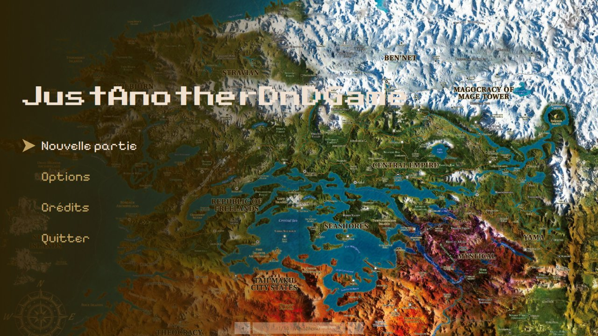 | 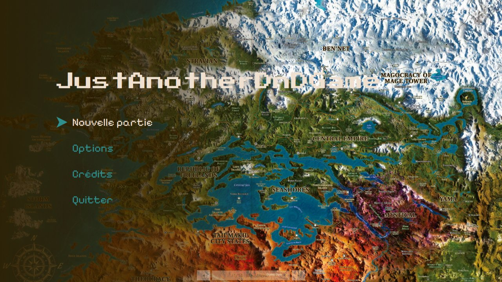 |
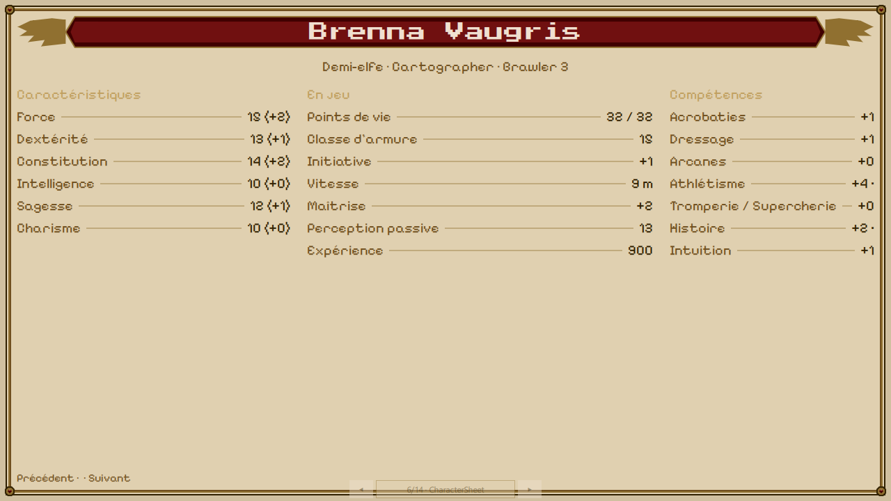 | 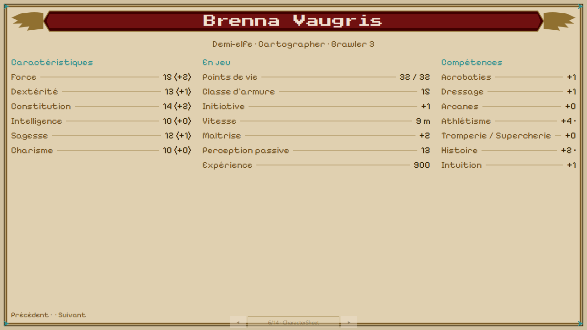 |
Le git diff du test touche trois fichiers, tous sous Source/Ui/** ; aucun .cpp, aucun .h, aucun fichier engendré. Les deux journaux de session ne contiennent aucun avertissement QML.
Où en est la phase 1
- Le jeu démarre sur les quatorze écrans (
--screen=<Nom> --screenshot=), aucun avertissement QML dans le journal ;JADG_QML_FROM_SOURCE=1relitSource/Ui(« Interface lue depuis les sources »). ctest: 1033/1033.- Avec le
qmllint6.8.7 de l'atelier et les doublures : 44 fichiers sur 46 se résolvent — les quatorze formulaires, les quatorze contrôles, la galerie, les quatorze jumeaux. Les deux restants,Main.qmletScreenStack.qml, importentJadg.Applui-même : fichiers de câblage, rien ne s'y dessine. check_qml_designer_compat.py(196 éléments, 9 règles),check_ui_layers.py(278 éléments),check_qt_version_pin.py,lint_lots.py,lint_exigences.py: verts.
Phase 2 — charte v2 et matière première
T2.1 — La charte v2
Cette section remplace la direction du parchemin pixel (LOT-66, LOT-76, LOT-86) pour les écrans du jeu. Elle ne réécrit pas ces lots : ils décrivent ce qui a été livré, et la v1 reste à l'écran jusqu'à ce que la phase 3 ait transcrit chaque écran.
Ce qui est gardé
- Le parchemin de Tanares, avec ses rôles et leurs valeurs :
background,surface,surfaceAlt,text,textMuted, relevés sur les feuilles de personnage du corpus. Les maquettes ne les contredisent pas : le champ de parchemin de l'inventaire (maquette 04) mesure#e4d4ac, contre#e0d0b0poursurface— un pas de quantification d'écart. On garde la mesure du corpus : c'est la source, la maquette n'en est qu'une interprétation. - L'or et le grenat :
accent,border,frameOrnament,gem,gemShadow. Les maquettes en ajoutent les faces éclairées (goldLight,gemLight) sans remplacer les valeurs existantes. - Le focus signalé par une marque, pas par une teinte (
EX-IHM-071) ; l'étanchéité des deux portées, jeu et éditeur (EX-IHM-050) ; aucune couleur, famille ni taille hors deTokens.qml(EX-IHM-105).
Ce qui change
- Deux matières, et chaque écran en choisit une. Les panneaux sombres cerclés d'un filet d'or portent le menu principal, les options, les crédits, la carte et le HUD — des écrans posés sur une scène peinte, qu'ils ne doivent pas masquer. Le parchemin porte la fiche de personnage, l'inventaire, l'équipe de mercenaires et les compétences — des documents du personnage, qui se lisent comme la feuille du corpus. Pause et journal passent sur panneau sombre, dialogue et marchand sur parchemin (T3.9).
- La typographie.
Cinzel— capitales romaines — pour les titres, plaques et bandeaux ;IM Fell Englishpour le corps ; son italique pour les citations et textes d'ambiance (rôleloreFamily). Une échelle de cinq tailles, en pixels à 1080p : 58 (titre du jeu), 36 (titre d'écran), 24 (section), 18 (corps), 14 (légende). Ces tailles sont celles du plan du lot, lues sur les maquettes ; elles se vérifient écran par écran, captures à côté de la maquette, en phase 3. - Les illustrations peintes : fonds de scène, portraits, carte, et les ornements eux-mêmes — cadres, plaques, boutons, médaillons — livrés en images 9-patch produites à 1080p depuis le cahier des assets (T2.4), et non plus tracés (
EX-IHM-075refondue). - Le facteur d'agrandissement devient réel :
uiScale, la fenêtre rapportée à 1920 × 1080.
Ce qui est écarté, et pourquoi
- Les polices pixel (
Pixelify Sans,Press Start 2P). Une police bitmap et une illustration peinte ne cohabitent pas — leLOT-66l'avait écrit contre le pixel art, et les maquettes le rendent visible. Leurs fichiers partent après la phase 3, pas avant : les écrans v1 les emploient. - Le facteur entier hors du viewport. Il existait pour une seule raison : à 1,5×, le trait et le filet d'un cadre tracé s'arrondissaient à la même épaisseur et la réserve de parchemin disparaissait. La v2 ne trace plus de filet d'un pixel ; une image 9-patch s'échantillonne à tout facteur. Le viewport garde l'entier : ses tuiles, elles, sont encore des pixels.
- Le tracé des ornements. Les filigranes d'or en relief et les plaques à grain des maquettes ne se tracent pas de façon crédible en
Shape: l'essayer aurait produit une troisième direction graphique, ni la v1 ni les maquettes. Les trois raisons de l'ancienneEX-IHM-075restent, comme conditions imposées à chaque image. - Le découpage des maquettes. Elles sont sorties d'un générateur, à une définition qui n'est pas celle du jeu (1536 à 1672 px de large), avec du texte incrusté : on y relève des cotes et des couleurs, on n'y prélève aucun pixel.
- La scène isométrique peinte du HUD (maquette 01). Le moteur rend un viewport en pixel art ; la maquette en fixe le cadre, pas la scène (T4.1).
La palette relevée
Chaque rôle nouveau est mesuré par scripts/measure_mockup_palette.py sur une zone nommée d'une maquette ; la valeur écrite dans Tokens.qml est celle que le script imprime, et --check échoue si l'une s'en écarte. --annotate <dossier> dessine chaque zone sur sa maquette — c'est ainsi que les zones ont été vérifiées une à une, et corrigées quand elles mordaient sur un libellé ou un ornement.
Trois mesures, parce qu'une maquette porte trois sortes de matière :
- surface — un fond sans texte ni ornement : le mode de l'histogramme quantifié de la zone ;
- trait — un libellé, un filet, une icône : le fond est d'abord relevé, puis seuls les pixels dont l'écart de luminance à ce fond atteint 60 % de l'écart le plus fort sont gardés. Un glyphe anticrénelé a plus de pixels de bord que de cœur : sans ce tri, le mode serait une couleur intermédiaire qui n'existe nulle part ;
- lumière — la face éclairée d'une matière en relief : le mode du quart le plus lumineux. Le mode de la plaque entière donne sa face ombrée — pour le grenat, c'est
#6c0404, déjà tenu pargem.
Quantification à 8 niveaux par canal, et non 16 comme au LOT-66 : les panneaux sombres tiennent tous entre #000000 et #181818, qu'un pas de 16 confond en un seul noir. Coordonnées en pixels de la maquette elle-même.
| Rôle | Valeur | Maquette | Zone (x0, y0, x1, y1) | Mesure | Ce que la zone montre |
|---|---|---|---|---|---|
panel | #0c0c0c | 07 crédits | (420, 470, 800, 480) | surface | fond du grand panneau, entre deux sections |
panelRaised | #141414 | 01 HUD | (1560, 288, 1640, 310) | surface | panneau des quêtes posé sur la scène, à droite du titre |
panelEdge | #e4a43c | 05 options | (1417, 300, 1424, 800) | trait | filet d'or du bord droit du panneau |
goldLight | #fcd444 | 05 options | (466, 160, 500, 200) | trait | losange d'or de l'intertitre « Langue » |
gemLight | #8c0404 | 06 menu | (392, 372, 500, 404) | lumière | plaque grenat de l'entrée active « Continuer », après le libellé |
textOnPanel | #fcfcfc | 06 menu | (265, 455, 420, 480) | trait | libellé « Nouvelle partie » |
textOnPanelMuted | #74747c | 05 options | (1010, 533, 1085, 550) | trait | libellé désactivé « Multijoueur » |
success | #0c2c0c | 05 options | (1368, 884, 1388, 902) | lumière | plaque verte d'« Appliquer », après le libellé |
danger | #540c0c | 05 options | (1172, 884, 1196, 902) | lumière | plaque rouge d'« Annuler », après le libellé |
info | #0c141c | 05 options | (530, 884, 552, 902) | lumière | plaque bleu nuit de « Par défaut », entre l'icône et le libellé |
Deux constats de la mesure, qui contredisent ce que l'œil proposait :
success,dangeretinfosont des matières de plaque, pas des couleurs de texte. Sur les maquettes, la coche d'« Appliquer » est crème et la croix d'« Annuler » est dorée : ce qui dit « valider » ou « annuler », c'est la plaque. Aucune des trois n'est lisible en texte surpanel. Le texte posé dessus esttextOnPanel.- Le filet des panneaux sombres est de l'or vif, pas du bronze.
panelEdge(#e4a43c) est plus proche degoldLightque d'accent(#c0a060, l'or mat du parchemin) : un panneau sombre se cercle d'or éclairé, et c'est ce qui le détache de la scène.
Exigences refondues
EX-IHM-070 décrit la charte v2 et son facteur réel ; EX-IHM-075 passe du tracé à l'image produite, en gardant ses trois raisons comme conditions ; EX-IHM-076 admet une seconde provenance, la production depuis le cahier ; EX-IHM-081 borne les deux facteurs. Chaque refonte garde le texte ou le motif de la version précédente, et nomme ce lot. Le guide de conception suit (facteur, échelle, ornements).
Laissé ouvert, et à qui
EX-IHM-072contre le T3.2. L'exigence retire tout contrôle grisé non branché ; le plan des options dessine les sections de la maquette « désactivées, non disponible ». Les deux ne tiennent pas ensemble : le T3.2 tranche — retirer ces sections, ou refondreEX-IHM-072— avant d'écrire le formulaire. Tranché au T3.2 : sections retirées, l'exigence est gardée.EX-IHM-053contre le T2.4. L'exigence veut des icônes vectorielles ; le cahier prévoit des icônes 64 × 64. Tranché au T2.4 (ci-dessous) : PNG produits au double de leur taille d'affichage, et l'exigence refondue.- Les couleurs de texte du HUD — le bleu du tour du joueur, le rouge du tour ennemi, l'or de la quête active (maquette 01) — ne sont pas des rôles de cette phase. Le T4.1 les relève avec le même script s'il en a besoin.
- Les noms de famille des polices (
Cinzel,IM Fell English) sont ceux de leur distribution ; le T2.3 les confronte à la tablenamedes fichiers déposés, et corrigeTokens.qmls'ils diffèrent.
T2.2 — Les jetons
Source/Ui/Theme/Tokens.qml gagne, sans rien retirer :
- les dix rôles relevés ci-dessus, dans une section « charte v2 » qui renvoie au script ;
uiScale, réel, 1 par défaut — la valeur de la conception, où Design Studio dessine à 1080p ;- les familles :
titleFamilypasse àCinzel,bodyFamilyàIM Fell English, etloreFamily(même famille, en italique) s'ajoute ; - l'échelle typographique v2 :
fontDisplay,fontScreenTitle,fontSectionTitle,fontBody,fontCaption.
Deux écarts au plan, assumés :
- Les tailles portent le préfixe
font. Le plan les nommaitdisplay,screenTitle,sectionTitle,body,caption; quatre de ces noms sont encore ceux de la v1, que le même plan garde jusqu'au T5.2. Deux propriétés ne peuvent pas porter le même nom. - Les tailles sont multipliées par
uiScaledansTokens.qml, et arrondies. Le plan les voulait « non multipliées » — non multipliées par l'entier, ce qu'elles sont. Les multiplier par le réel au même endroit garde la règle qui a évité à la v1 de diverger : un formulaire n'écrit jamais le facteur, donc ne peut pas l'oublier. À la conception,uiScalevaut 1 et le formulaire lit exactement 58, 36, 24, 18 et 14.
Source/App/Game/Qml/Main.qml lie uiScale à la fenêtre : max(0,5 ; min(largeur / 1920 ; hauteur / 1080)). Le plus petit des deux rapports, pour que l'écran de conception tienne entier quel que soit le format ; une liaison et non deux gestionnaires, parce que le facteur dépend des deux dimensions ; plancher à 0,5, sous lequel un corps de 18 px ne se lit plus. Aucune boucle (EX-IHM-080, EX-IHM-081) : aucun écran ne contraint la fenêtre.
Les grandeurs v1 (scale, screenTitle… frameThickness) sont marquées obsolètes dans le fichier et restent lues par les quatorze écrans. Conséquence visible, attendue : les écrans v1 lisent bodyFamily et titleFamily, qui nomment désormais des polices que le jeu n'enregistre pas encore. Jusqu'au T2.3, ils s'affichent dans la famille générique de repli (EX-IHM-052) — tailles et mise en page inchangées. Le journal ne le signale pas : il ne dit qu'un fichier absent de la liste de registerIdentityFonts(), où ces polices n'entrent qu'au T2.3.
T2.4 — Le cahier des assets
Le cahier est une page à part, LOT-87 — Cahier des assets de la charte v2, et son jumeau machine assets-brief.json, validé contre assets-brief.schema.json par scripts/checks/check_assets_brief.py. 80 pièces, 214 images (une par état ou par membre d'un jeu d'icônes), en onze familles ; chacune porte sa clé au format du LOT-39 (ui/<famille>/<pièce>), sa taille de production à 1080p, ses marges 9-patch ou sa taille fixe, son fond, ses états, sa description, son prompt, les zones de maquette qui la montrent, les écrans qui la posent et l'aplat de jetons qui la remplace tant qu'elle manque. Six éléments des maquettes sont écartés du cahier avec leur raison (carte, portraits, icônes d'objets, scène du HUD, illustrations de la base, planche 02).
Ce que la tâche a décidé, en plus de la liste :
- Le prompt est assemblé, pas recopié. Style, matière, interdit des lettres, prompt de la pièce, variante, toile et règle d'étirement sont mis bout à bout par
--prompt <clé>, et chaque couleur ou famille qu'il impose est lue dansTokens.qmlà ce moment-là. Une palette recopiée dans 214 prompts aurait divergé au premier jeton changé. - La page est engendrée. Les tables de la page du cahier sortent du JSON (
--write) ; la CI échoue si elles ne le suivent plus. EX-IHM-053refondue : les icônes du jeu sont des PNG produits à deux fois leur taille d'affichage (128 × 128 pour 32 à 64 px), réduits avec lissage ; celles de l'éditeur restent vectorielles.- Un remplissage de jauge n'est pas une image : un relief en niveaux de gris posé sur un aplat des jetons, comme
EX-IHM-075le demande. Le plan prévoyait trois remplissages peints. - Le logotype est la seule pièce qui porte des lettres ; la signature de la fiche devient un paraphe sans nom.
- Six onglets d'options, pas huit : ceux de la maquette 05.
Les zones ont été relevées sur les maquettes puis contrôlées en les y dessinant (--annotate) ; une seule mordait à côté, corrigée. Le garde-fou a été éprouvé par injection : zone hors maquette, jeton inconnu, marges sans milieu, clé en double, pièce dérivée d'une pièce absente, marges sur une pièce fixe, {jeton} hors palette, écran sans pièce, page en retard — chacune le fait échouer.
T2.5 — Le manifeste étendu aux images produites
illustrations.json ne connaissait qu'une provenance, l'extraction du corpus (document, page, region). Une seconde provenance s'ajoute, "produced" : la clé du cahier (cahier), le prompt tel qu'assemblé et envoyé (prompt), la date (date), et pour une pièce 9-patch les marges (margins, celles du cahier, recopiées à la lettre). Les champs d'empreinte et de dimensions (sha256, bytes, size) restent communs aux deux provenances : une image produite se vérifie comme une image extraite, seule sa provenance et ce qu'elle cite diffèrent.
scripts/checks/check_ui_assets.py garde ses trois contrôles (empreinte, dimensions, orphelin — étendu à UI.rglob() pour suivre les images produites dans leurs sous-dossiers de famille), et en gagne deux :
- une illustration produite doit citer une clé du cahier qui existe (
cahier_keys(), la même fonction qui déplie les clés de variante quecheck_assets_brief.py) ; - chaque clé du cahier finit par avoir un fichier (une entrée
"produced"la cite), ou une mention explicite « non livrée » dans une nouvelle sectionpendingdu manifeste — une entrée sanskeyscouvre toute clé qu'aucune entrée produite ne cite (la portée générale posée maintenant, puisqu'aucune pièce n'est encore produite), une entrée aveckeysnomme des clés précises.
Le recoupement avec le code (check_code_keys) ne porte plus que sur les illustrations extraites : une image produite n'est nommée par aucun écran avant que le T2.7 pose les briques qui la consomment, l'exiger maintenant aurait fait échouer le contrôle sur chaque pièce livrée avant son écran.
Vérifié par injection : un fichier déposé sans entrée (orphelin), une clé de cahier inconnue citée par une entrée produite, la section pending vidée avec les 214 clés du cahier encore non couvertes — chacune fait échouer check_ui_assets.py avec un message qui nomme la clé en cause.
T2.6 — La réception des images produites
scripts/assetsGeneration/receive_ui_assets.py : un dossier de PNG livrés par le générateur, chacun nommé par la clé du cahier qu'il porte (ui/frame/panel-dark.png → ui__frame__panel-dark.png, une variante ui/button/apply/hover → ui__button__apply__hover.png). Pour chaque fichier : la clé existe dans le cahier et n'a pas déjà été reçue, les dimensions et la présence d'un canal alpha (octet de type de couleur de l'en-tête PNG) correspondent à ce que la pièce annonce. Ce qui passe est installé sous installRoot/<famille>/... (la clé, préfixe ui/ ôté) et ajouté au manifeste avec le prompt assemblé par check_assets_brief.assembler() — le même module est réutilisé, pas recopié. Ce qui échoue est refusé avec le motif, pour régénération ; --dry-run rapporte sans rien écrire.
Ce que le script ne vérifie pas — lettres incrustées, fidélité de la matière au prompt — reste une relecture humaine avant de le lancer : ce sont des jugements, pas des mesures.
Vérifié : un dossier de quatre PNG de test (une pièce fixe valide, une pièce 9-patch valide, une clé de variante mal formée, une clé inconnue, une pièce aux mauvaises dimensions, une pièce sans le canal alpha attendu) — les deux valides installées et déclarées, les quatre autres refusées avec leur motif ; check_ui_assets.py reste vert après une installation réelle.
Aucune pièce n'est encore produite : la production (le générateur d'images, hors de portée de Claude) n'a pas tourné. Le cahier et les deux scripts sont la matière prête à la recevoir. La production a tourné ensuite : les 213 pièces sont reçues le 18 septembre 2026 (voir la réception des images produites).
T2.7 — Les briques de la charte v2
Treize briques dans Source/Ui/Controls/, toutes en .ui.qml, toutes nommées par le plan :
| Brique | Base | Pièces du cahier | Propriétés qui choisissent la pièce |
|---|---|---|---|
PanelFrame | Item | ui/frame/panel-*, subpanel-* | material, subpanel, bound, empty ; le contenu se pose dedans, en retrait de padding |
TitlePlate | Item | ui/plate/title-garnet, title-black | material, text |
SectionBanner | Item | ui/plate/section-banner, section-bar | material, text |
OrnateButton | Button | ui/button/<kind>/<état> | kind (menu, primary, secondary, apply, cancel, default, back), iconKey, forcedState |
OrnateTab | TabButton | ui/tab/ribbon/<état>, segment/<état> | material, iconKey, forcedState |
OrnateCheck | CheckBox | ui/control/checkbox/<état> | forcedState |
OrnateSlider | Slider | ui/control/slider-track, slider-handle/<état> | forcedState |
OrnateCombo | ComboBox | ui/control/combo/<état>, combo-popup | forcedState |
StatMedallion | Item | ui/medallion/ability, derived-stat | kind, label, value, modifier |
PortraitFrame | Item | ui/medallion/portrait-round/<état>, portrait-square/<état>, portrait-hud, level-pip | shape, source, active, level, size |
ItemSlot | Item | ui/slot/item/<état>, rarity/<rareté>, quantity-pip | iconSource, rarity, quantity, selected, equipped, forcedState ; pointer pour le jumeau |
Gauge | Item | ui/gauge/track, fill-sheen | kind (health, experience, weight), value, label |
GoldDivider | Item | ui/control/divider-gold | — |
Et deux porteurs d'image qu'elles partagent, hors de la liste du plan : NinePatchArt (une pièce 9-patch) et FixedArt (une pièce de taille fixe). Ils existent pour qu'aucune brique ne réécrive le calcul d'échelle ni la règle « livrée ou repli ».
Ce que la tâche a décidé :
- Une brique nomme une clé du cahier, jamais un fichier.
Source/Ui/Theme/Artwork.qml, un singleton, dit quelles pièces sont livrées : une tabledelivered(clé → fichier, marges) et le dossier résolubaseUrl. Pas de fonction : Qt Design Studio refuse tout appel de fonction dans un.ui.qml, et leqmllintde Qt 6.11 le signale (FunctionsNotSupportedInQmlUi). Tant qu'une pièce manque, la brique dessine l'aplat de repli que le cahier lui prévoit (fallback), avec les jetons ; le jour où elle arrive, la même brique la pose sans qu'un formulaire change. Pourquoi une table et non « essayer le fichier » : unBorderImagequi échoue écrit un avertissement QML par instance, et le journal de session — qui sert de preuve à chaque porte — serait noyé. - La table est engendrée, pas tenue.
receive_ui_assets.pyla réécrit à chaque réception, depuis les entréesproduceddu manifeste ;check_ui_assets.pyéchoue si elle ne le suit plus (--write-artworkla répare) et si une brique nomme en toutes lettres une pièce absente du cahier. - Les 9-patch sont posés à la taille de conception, puis réduits d'un bloc. Les marges d'un
BorderImagesont en pixels de l'image et ne suivent pas l'élément : à 720p, des coins de 112 px mangeraient un panneau réduit aux deux tiers.NinePatchArtpose l'image àtaille / uiScaleet la ramène parscale: uiScale— coins, bords et centre dans les proportions de la maquette. - Les contrôles sont des contrôles Qt restylés (
Button,TabButton,CheckBox,Slider,ComboBox), pas des dessins qui les imitent : clavier, manette, glisser et accessibilité viennent avec, et un jumeau brancheclickedoucheckedcomme sur tout contrôle. Le styleBasic, queMain.cppimpose, est celui qui acceptebackground,contentItem,indicatorethandle. - Les états sont des propriétés. L'état visuel se déduit de ce que le contrôle sait (
enabled,down,hovered,highlighted,checked) ;forcedStatel'impose — ce qui permet à la galerie, et à l'atelier où l'on ne survole rien, de montrer chaque état côte à côte. Pour une entrée de menu,activeest l'entrée courante (highlighted), celle que désigne le clavier ou la manette. - Le remplissage d'une jauge et celui d'un curseur sont des aplats de jetons, jamais une image étirée à la largeur de la valeur (qui en déformerait les extrémités) ; la jauge y pose le relief en niveaux de gris du cahier (
fill-sheen), comme le T2.4 l'a tranché. Tokens.qmlgagnegapSmall,gapMedium,gapLarge(8, 16, 32 à 1080p) etstrokeWidth(le trait des aplats de repli, jamais sous un pixel). Préfixegappour la même raison quefont:spaceSmallet ses voisins sont encore ceux de la v1.- La galerie est
DesignStudio/Main.ui.qml, posée telle quelle parScreenStacksous--screen=Galleryet en dernier dans le sélecteur de développement. Import qualifié (import Jadg.Ui as Ui) :Jadg.UietJadg.Appexportent tous deux un typeMain. - Un écart à la règle « plus personne ne touche à CMake » de la porte 1, et un seul en plus de la liste des fichiers : les images produites entrent dans la ressource par motif (
UI/*/*.png,CONFIGURE_DEPENDS). Sans lui, la première livraison serait installée, déclarée, dite livrée parArtwork.qml… et introuvable dans le binaire. Le motif ne remplace aucune liste : celle qui fait foi reste le manifeste, dontcheck_ui_assets.pyrefuse déjà tout fichier absent.
Vérifié de bout en bout avec quatre mires PNG (coins, bords et centre de trois couleurs, aux marges exactes du cahier) : receive_ui_assets.py les installe et réécrit Artwork.qml, check_ui_assets.py reste vert, le jeu reconstruit les embarque par le motif, et la galerie les pose à 720p avec des extrémités de plaque de 107 px (160 × 2/3). Mires retirées ensuite. La mire a montré une contrainte que le cahier implique sans la dire : un 9-patch plus petit que ses deux marges superpose ses coins — 224 px de haut au moins pour panel-dark, 256 pour panel-parchment. Les écrans de la phase 3 prennent un sous-panneau en deçà.
Laissé ouvert : le panneau Composants de l'atelier (constat de la phase 1, toujours « (vide) »). Les briques se posent depuis la galerie ou par le code ; un .qmltypes ou des designer/*.metainfo restent l'hypothèse, et ne sont pas instruits ici.
Où en est la phase 2 — vérifié le 13 septembre 2026
scripts/build.ps1 -Preset ninja -Test: construction propre,ctest1033/1033.- Les quatorze écrans se chargent (
--screen=<Nom> --screenshot=) : quatorze captures écrites, code de sortie 0, aucune ligne d'avertissement QML ni d'erreur dans le journal. Mise en page v1 inchangée, en famille de repli. qmllintdu Qt 6.8.7 de l'atelier, avec les doublures : muet surTokens.qml,MainMenuForm.ui.qmletOptionsForm.ui.qml.measure_mockup_palette.py --check(10 rôles, 0 divergence),check_ui_layers.py,check_qml_designer_compat.py,lint_exigences.py(352/352),lint_lots.py: verts. Doxygen sans erreur.
Phase 3 — les écrans
T3.1 — Le menu principal (maquette 06)
MainMenuForm.ui.qml réécrit sur les briques v2, cotes relevées sur la maquette (1672 × 941) et ramenées à 1920 × 1080, puis multipliées par Tokens.uiScale : scène en fond, logotype, six entrées à icône, encart de profil, citation, version.
- Six entrées, deux sans destination. « Continuer » et « Charger une partie » sont dessinées à leur place dans l'état
disabledd'OrnateButton, jusqu'à la sauvegarde (LOT-17). Le jumeau ne les rend jamais courantes : les flèches les sautent, un bouton désactivé n'émet ni survol ni clic, etactivate()refuse une entrée désactivée. L'écran s'ouvre donc sur « Nouvelle partie ».continueAvailableetloadAvailableles rallumeront sans toucher au formulaire. - La marque de focus. La plaque grenat de l'entrée active est une teinte ;
EX-IHM-071veut une marque. Un losange d'or (FocusMark, pièceui/control/focus-fleuron) se pose devant l'entrée courante. - Quatre briques de plus, pour les pièces du menu qui n'en avaient pas :
CoverArt(troisième porteur d'image, pour les piècesdisplay: cover),LogoPlate(ui/plate/logo, dont le repli écrit le nom en deux lignes et s'efface le jour où l'image, qui porte ses lettres, arrive),QuotePlate(ui/plate/quote) etFocusMark. Les trois premières servent aussi aux crédits (T3.3) ; toutes sont dans la galerie. - La version vient de
core::Engine::version()parQCoreApplication::setApplicationVersion, lue en QML parQt.application.version: aucun type C++ ni doublure de plus. - Le profil est en attente :
main_menu.profile.nameetmain_menu.profile.portrait(PendingData). Aucun lot ne tient de profil de joueur ; le cadre de portrait prend son étatempty. - La navigation réelle ne change pas : Nouvelle partie, Options, Crédits, Quitter appellent le routeur comme avant. Clavier et pointeur pilotent le même
currentIndex; les boutons ne prennent pas le focus (Qt.NoFocus), qui reste à l'écran et à ses touches.
Écarts assumés :
- Aucune pièce n'est livrée. Le plan voulait fonds, cadres, plaques, boutons et contrôles livrés avant la phase 3 ; la production n'a pas tourné. L'écran est posé sur les aplats de repli des briques, qui céderont la place aux images sans qu'une ligne du formulaire change. Les captures ci-dessous jugent la mise en page, pas la matière.
- La scène de repli est la carte de Tanares, et non l'aplat
panelque le cahier prévoit pourui/background/menu-scene: un menu noir aurait caché la composition que la capture doit montrer, et la carte est une illustration extraite, déjà déclarée. Le dégradé sombre du tiers gauche ne s'affiche qu'avec ce repli : la scène produite est peinte avec un tiers gauche sombre. - Logotype à 608 px de large, mesuré sur la maquette, et non les 532 px du cahier. Encart de profil à 96 px de haut, et non 80 : un 9-patch plus petit que ses deux marges superpose ses coins.
- Pas de roue dentée dans l'encart de profil : elle n'ouvre rien que le menu n'ouvre déjà, et aucune pièce du cahier ne la porte.
EX-IHM-072retire tout réglage inopérant. Deux entrées désactivées ne sont pas des réglages, et le plan les veut visibles ; l'exigence n'est pas refondue ici. Le T3.2, qui tranche le cas des options, dira si la règle s'étend aux entrées de menu.
| Maquette | 1920 × 1080 | 1280 × 720 |
|---|---|---|
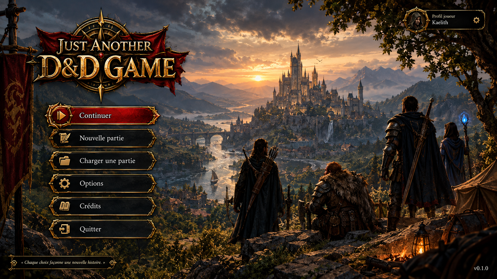 | 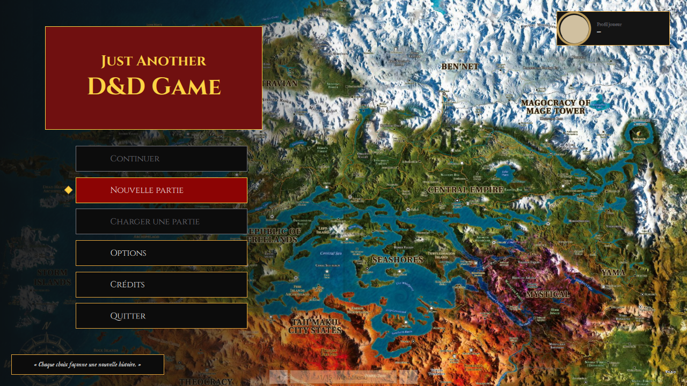 |
T3.2 — Les options (maquette 05)
EX-IHM-072 contre le plan : tranché le 14 septembre 2026, l'exigence est gardée. Aucune section de la maquette sans réglage branché n'est dessinée, même désactivée. Il reste donc trois onglets sur six : Général (langue, journaux), Graphismes (plein écran, synchronisation verticale, compteur de diagnostic), Audio (volume). Jeu, Commandes et Accessibilité reviendront avec leurs réglages, et les sections Difficulté, Réseau, Sauvegarde et Confidentialité avec les leurs.
- Colonne d'onglets sous la plaque de titre grenat : ce sont des
OrnateButtonde genremenu, la pièce que le cahier prévoit aussi pour les onglets verticaux. La rose des vents en filigrane (FixedArt) n'apparaît qu'une fois livrée. Changement d'onglet au pointeur, ou parPageUpetPageDown. - Grand panneau sombre : chaque section est un sous-panneau coiffé d'un
SectionBannersombre, deux colonnes de même largeur. Les contrôles sont les briques Qt restylées (OrnateCheck,OrnateSlider,OrnateCombo). - La barre de pied a un sens réel. Les boutons Annuler et Appliquer de la maquette auraient été inopérants sur un modèle qui écrit à chaque geste. Les contrôles tiennent donc les valeurs en attente : « Appliquer » les écrit dans
OptionsModelet ne s'allume que si une valeur diffère du réglage enregistré (dirty) ; « Annuler » etÉchapferment l'écran sans rien écrire ; « Par défaut » pose les valeurs d'usine dans les contrôles, sans les écrire non plus. OptionsModel.defaults, propriété constante nouvelle (et sa doublure) : les valeurs d'usine, que le constructeur lit aussi quand rien n'est enregistré. Une seule table, et non une recopie en QML qui aurait divergé.- Le fond reprend le repli du menu (carte de Tanares), sous un voile de
panel: le décor produitui/background/options-backdropest déjà flou et sombre.
Conséquence assumée : le volume et la langue ne s'appliquent plus au glisser ou au choix, mais à « Appliquer ». C'est ce que la barre de pied de la maquette promet.
| Maquette | 1920 × 1080 (Général) | 1280 × 720 (Général) | 1280 × 720 (Graphismes) |
|---|---|---|---|
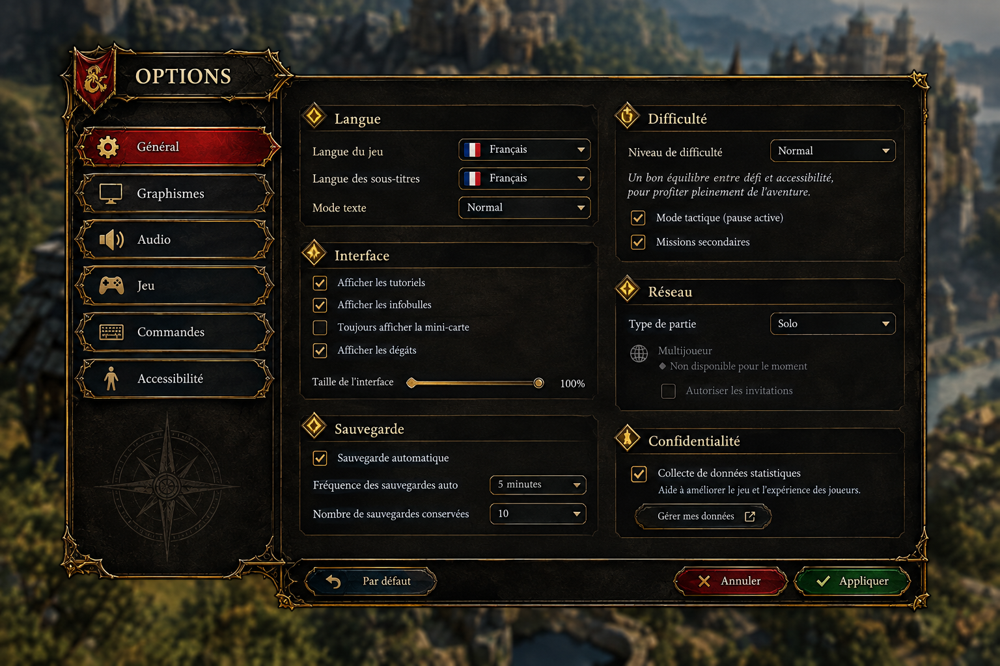 | 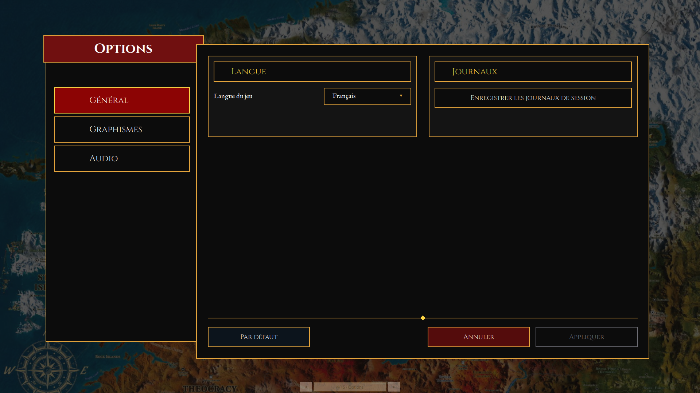 | 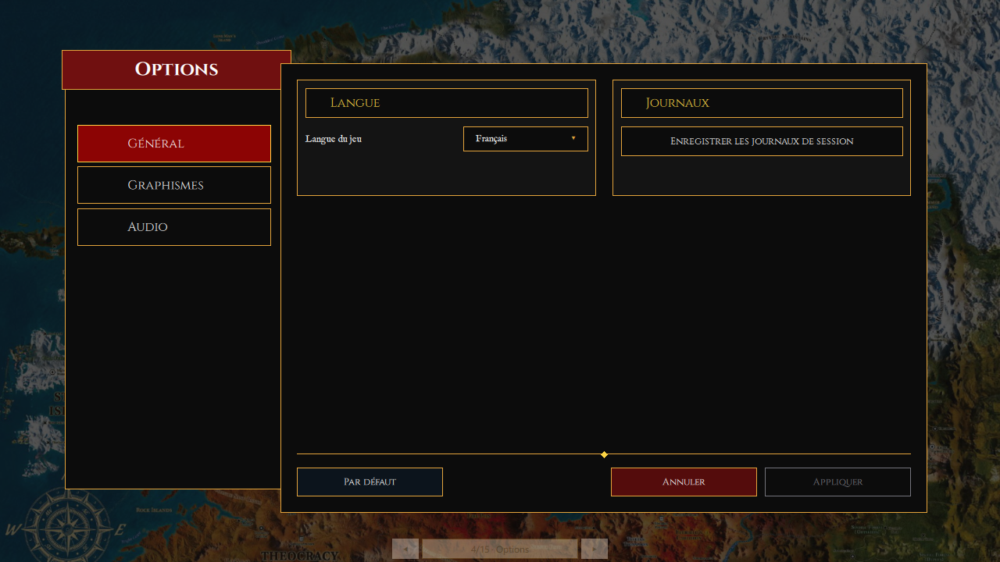 | 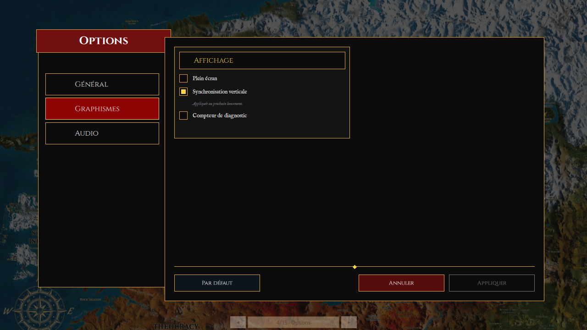 |
T3.3 — Les crédits (maquette 07)
Scène du menu, logotype, grand panneau sombre coiffé de sa plaque « Crédits », deux colonnes de sections, citation au pied du panneau, bouton Retour, version.
- Les attributions sont des données.
Source/Elements/Credits/credits.jsonporte les sections, leur colonne, leurs titres et rôles traduits (fr,en), et les noms (non traduits). Le formulaire ne contient aucun nom propre : il ne sait dessiner qu'une section (briqueCreditSection). Les vrais crédits du projet tiennent en quatre sections, quand la maquette en montre cinq et vingt noms. Rien n'est inventé pour remplir. - Lecture pure et testée :
hmi::readCredits(HMI/Presentation/CreditsCatalog) lit le JSON dans une langue, retombe sur le français pour un libellé non traduit, et refuse toute section malformée plutôt que de rendre des crédits partiels. Cinq tests, dont un sur le fichier livré dans les deux langues. CreditsModel(Jadg.Runtime, et sa doublure) : une colonne de sections, pour une langue. Le jumeau en pose deux, dont la langue suitOptionsModel.language. Le fichier est embarqué dans la ressource (:/jadg/credits/credits.json) : des attributions que les licences exigent ne dépendent pas d'un fichier posé à côté de l'exécutable.- Retour et
Échapramènent au menu par le routeur.
Écart : la section « Scénario & Univers » de la maquette n'existe pas. Le projet n'a pas de contributeur à y nommer, et credits.json en accueillera une le jour où il en aura un (icône story déjà au cahier).
| Maquette | 1920 × 1080 | 1280 × 720 |
|---|---|---|
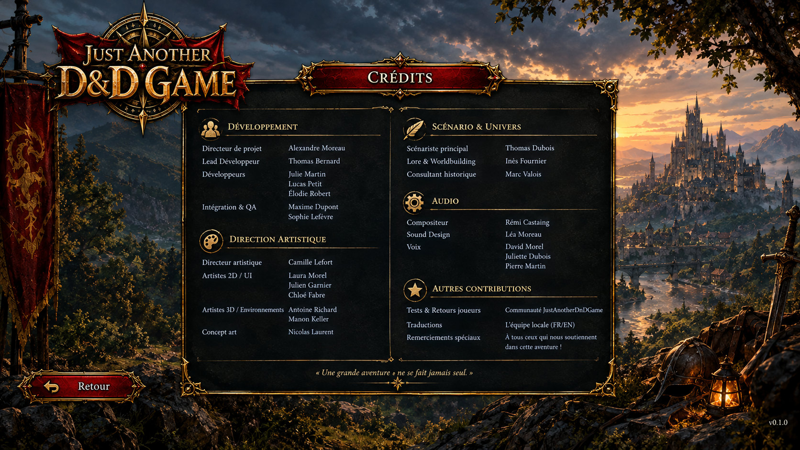 | 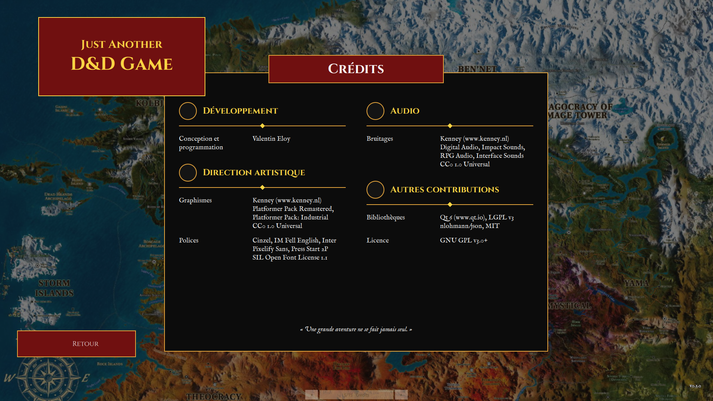 | 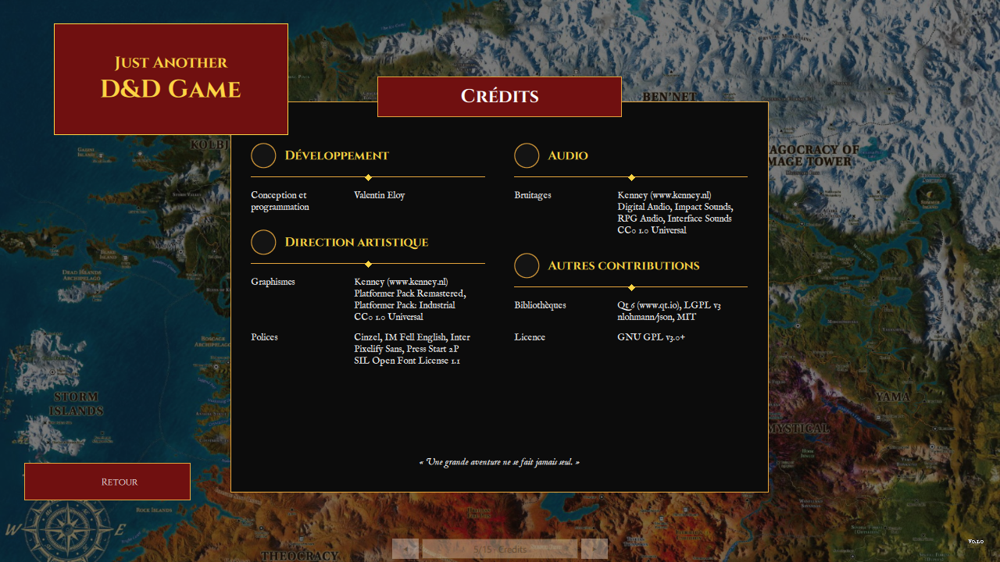 |
T3.4 — La fiche de personnage (maquette 03)
Un grand parchemin relié en trois colonnes : portrait et six médaillons à gauche ; identité, jauges, sceau et paraphe au centre ; dix-huit compétences à droite.
- Score et modificateur séparés.
CharacterSheetModelgagnevalues, la table des valeurs formatées par clé.hmi::characterSheetValuesproduisait déjàsheet.ability.<id>.scoreet.modifierséparément, pour la roue de la planche 1 ; rien n'est recalculé en QML. La doublure suit. - Les compétences sont une
ListViewsur le modèle existant. La briqueSkillRowporte une pastille pleine si la compétence est maîtrisée : la marque « • » de la valeur passe à la pastille et quitte la case. - Deux briques :
FieldRow(étiquette sur plaquette, valeur sur ligne réglée) etSkillRow, ajoutées à la galerie. - Vérifié : la force de la copie déployée de
demonstration-brenna.jsonpassée de 15 à 18 change le médaillon (18, +4) et, avec lui, Athlétisme (+4 → +6) ; donnée restaurée ensuite.
En attente (PendingData) : le matricule (character_sheet.registration), le seuil du niveau suivant qui remplit la jauge d'expérience (character_sheet.experience.next_level, LOT-74), et le portrait (character_sheet.portrait).
Écarts :
- Pas de portrait. Le plan le voulait tiré d'un jeton du corpus déclaré au manifeste ; le corpus n'est pas versionné, et l'extraire relève de la chaîne du
LOT-30, pas de cet écran. Le cadre prend son étatempty. - Les constantes de combat restent sur la fiche, en médaillons dérivés sur le filigrane de la colonne gauche (CA, initiative, vitesse, maîtrise, perception passive). La maquette ne les montre pas, mais la v1 les affichait ; les retirer aurait fait perdre une donnée réelle. Les jets de sauvegarde, eux, quittent l'écran : ils n'ont pas de place sur la maquette, et le modèle les garde (
savingThrows) pour l'écran qui les accueillera. - Les abréviations des caractéristiques (FOR, DEX…) sont écrites dans le formulaire, traduites par
qsTr. Le lexique des règles ne porte que les noms complets.
| Maquette | 1920 × 1080 | 1280 × 720 |
|---|---|---|
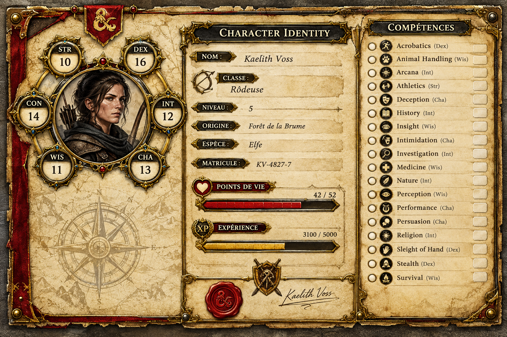 | 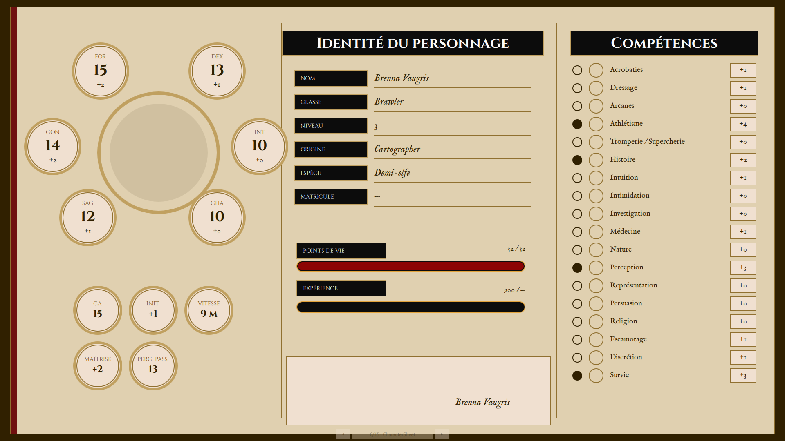 | 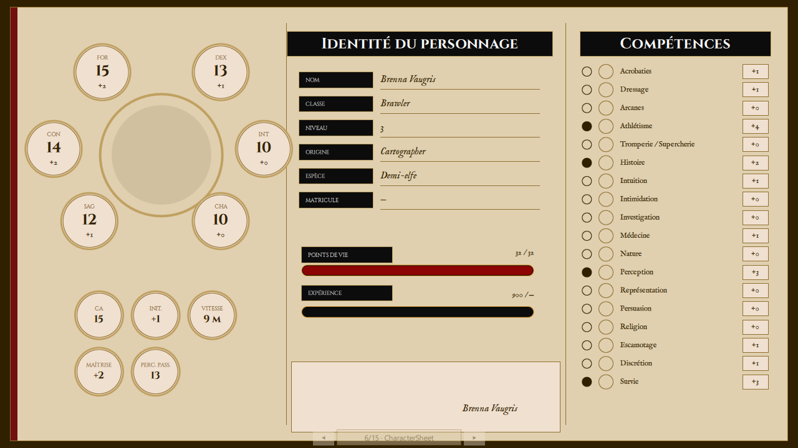 |
T3.5 — L'inventaire et l'équipement (maquette 04)
Trois parchemins : l'équipement porté et les statistiques dérivées ; les onglets, la grille du sac, la charge, l'or et le tri ; la fiche de l'objet sélectionné et ses actions.
L'écran agit. Filtrer, sélectionner, équiper, retirer, jeter, trier modifient l'inventaire, et tout se recalcule depuis lui : classe d'armure, charge, grille. Rien n'est ajouté ni retranché à une valeur publiée (règle du LOT-14).
- Logique pure et testée :
HMI/Presentation/InventoryScreenclasse les objets par famille (familyOf), rend les cases filtrées (backpackCells), la fiche d'un objet (itemSheet), son emplacement naturel (naturalSlot), et les actions :equipFromBackpack(ce que l'emplacement portait retourne au sac),unequipToBackpack,dropFromBackpack(un exemplaire),sortBackpack. Six tests. hmi::loadDemonstrationState: le chargeur du personnage de démonstration se scinde en un état (fiche, sac, catalogues) et le calcul de ses valeurs (demonstrationValues). La fiche garde son appel d'origine ; l'inventaire garde l'état, le modifie et le recalcule.InventoryModelgagne ce que le plan demandait : les familles pour les filtres (filter,cells), la sélection et sa fiche (selectItem,selectSlot,selection), la charge (loadRatio), plus l'or, les quatre statistiques dérivées, ce que porte chaque emplacement (equipped), et les actions (equipSelected,unequipSelected,dropSelected,sortBackpack). La doublure suit.ItemSlotgagnelabel: tant qu'un objet n'a pas d'icône, son nom s'écrit dans la case. Une case pleine et une case vide ne se distingueraient pas sinon.- Vérifié dans le jeu : le jumeau, modifié le temps d'une capture pour sélectionner la dague, l'équiper puis filtrer le matériel, montre la dague en main directrice, la sélection passée à l'emplacement (« Retirer ») et l'onglet Matériel actif, sans l'épée longue (retournée au sac, famille équipement). Modification retirée ensuite.
- Donnée : une dague entre dans le sac du personnage de démonstration. Tout son équipement étant déjà porté, « Équiper » n'aurait rien eu à montrer.
Écarts :
- Onglets Tous, Équipement, Matériel, Outils, et non Tous, Équipement, Consommables, Divers : les catalogues ne connaissent que
gear,tooletmount, plus les armes et armures. Un onglet « Consommables » ne trierait rien (EX-IHM-072). - Pas de bouton Examiner : la fiche est déjà affichée à côté. « Équiper » devient « Retirer » sur un emplacement porté.
- Dix emplacements sur seize : ceux de la maquette (tête, cape, torse, mains, pieds ; main directrice, main secondaire, distance, anneau, cou). Les seize restent dans
equipmentSlots. - Le matériel ne s'équipe pas : une amulette et une torche portent la même catégorie (
gear), et rien ne dit où ranger l'une ou l'autre. Seules les armes, armures et boucliers ont un emplacement naturel. - Pas de silhouette ni d'icônes d'objets : ni l'une ni les autres ne sont au cahier (icônes d'objets :
LOT-39).
| Maquette | 1920 × 1080 | 1280 × 720 |
|---|---|---|
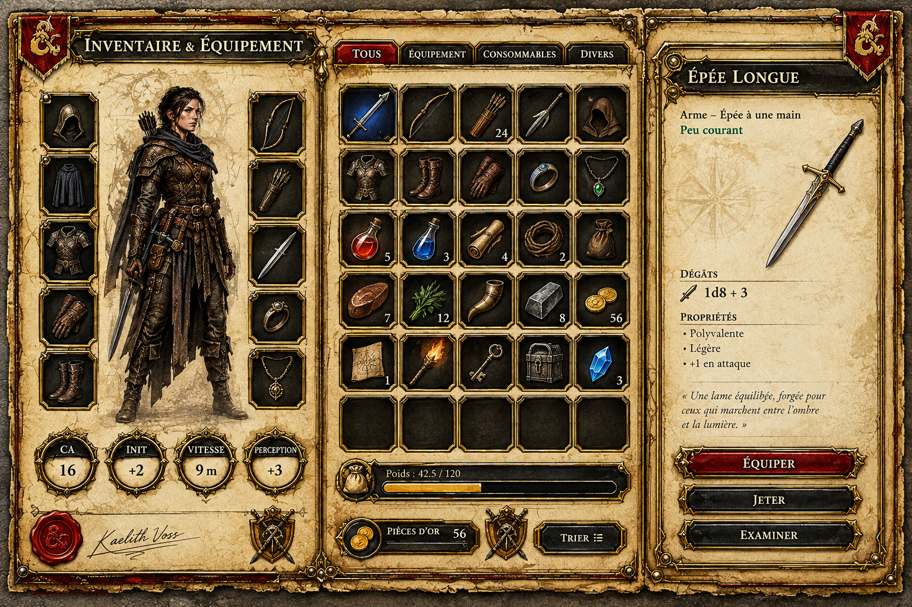 | 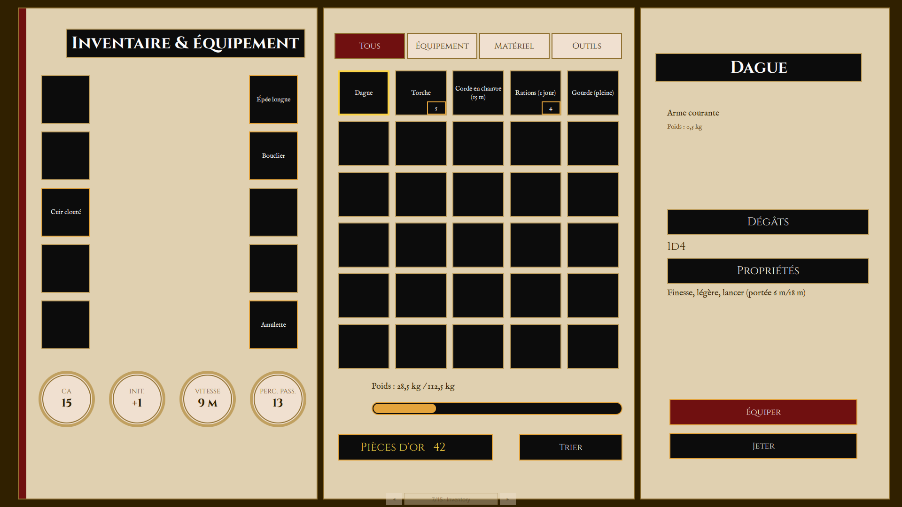 |
T3.6 — La carte du monde (maquette 08)
La carte VTT de Tanares en plein écran, qu'on déplace (glisser) et qu'on agrandit (molette, + et -, boutons de la mini-carte). Par-dessus : la plaque de titre, la barre de boussole, l'encart du personnage, la mini-carte, la barre d'état et la barre de navigation.
Constat qui change le critère du plan : l'atlas n'a pas de coordonnées. Le LOT-37 a extrait du livre les 13 régions et les 94 lieux, avec leurs textes, et aucune position. « Les 94 lieux posés aux coordonnées de l'atlas » n'était donc pas réalisable. Ce qui a été fait :
- Les 13 régions sont posées à des ancres relevées sur la carte, au centre du nom imprimé de chaque région, dans
Source/Elements/Maps/world-map-regions.json. Ce fichier est à part, et non dans l'atlas, parce que la chaîne d'extraction réécrit les régions et effacerait un champ qu'elle n'a pas produit. Les repères tombent sur les noms imprimés (capture), ce qui vérifie le relevé. - Les 94 lieux sont listés dans la fiche de leur région, qui s'ouvre au survol du repère : nom, gouvernement, nombre et noms des lieux. Leur placement individuel attend le voyage (
LOT-42). hmi::readRegionAnchorsethmi::worldMapRegions(HMI/Presentation/WorldMapRegions) : lecture pure, et jointure qui signale toute région sans ancre et toute ancre sans région. Deux tests, dont un qui joint l'atlas livré au fichier livré : 13 régions posées, 94 lieux répartis, aucun écart.WorldMapModel(Jadg.Runtime, et sa doublure) expose les régions jointes. L'atlas et les ancres sont désormais copiés à côté de l'exécutable (World/,Maps/), comme les catalogues RPG.
La carte en haute définition. world-map.jpg (1 612 × 990, tiré du PDF) est un fond de menu ; un écran qu'on consulte en zoom demande la ressource VTT (VTT/Map - World.jpg, 9 933 × 7 016). La chaîne du LOT-30 sait désormais livrer une illustration raster (IllustrationRaster) : world-map-hd.jpg, réduite à 3 072 × 2 170, 3,3 Mo, déclarée au manifeste avec sa provenance. Deux retouches de la chaîne au passage :
sourcebook illustrations <clés…>ne régénère que les illustrations nommées. Une ressource VTT se rééchantillonne sans PyMuPDF, et le poste de production n'a pas à pouvoir rendre les PDF pour la produire.- La régénération du manifeste gardait uniquement les entrées extraites, et effaçait donc la section
pendinget les images produites duLOT-87. Elle les conserve désormais.
En attente (PendingData) : le jour et l'heure (world_map.clock), le lieu du groupe (world_map.party.location), le seuil d'expérience et le portrait de l'encart. L'encart lit sinon la vraie fiche (CharacterSheetModel). La barre de navigation ouvre le journal, l'inventaire, la fiche d'équipe et les options par le routeur.
Écarts : pas de légende, puisque aucun point d'intérêt n'est typé dans l'atlas. Pas de quêtes sur la carte (LOT-16). La mini-carte montre la carte entière, sans rectangle de vue.
| Maquette | 1920 × 1080 | 1280 × 720 | Fiche de région (720p) |
|---|---|---|---|
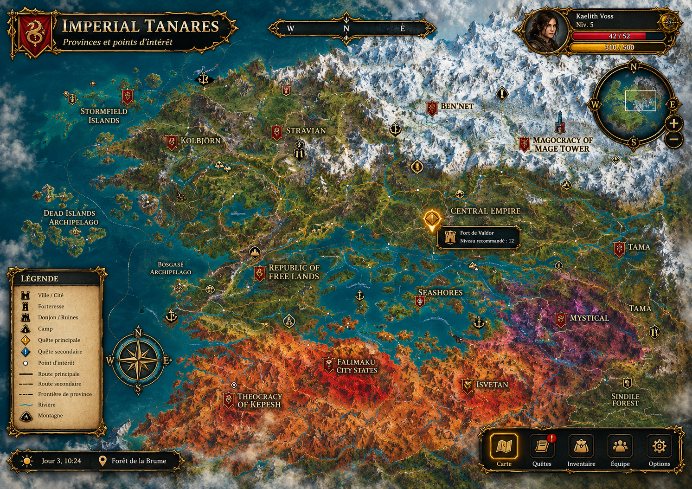 | 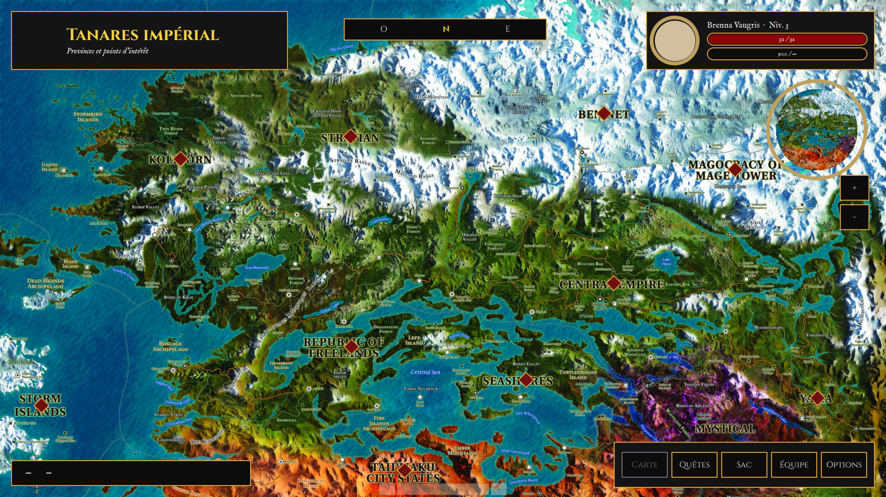 | 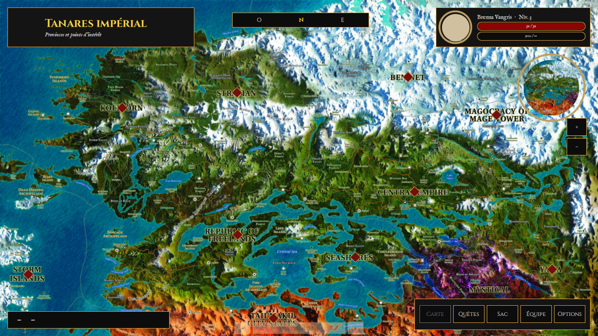 | 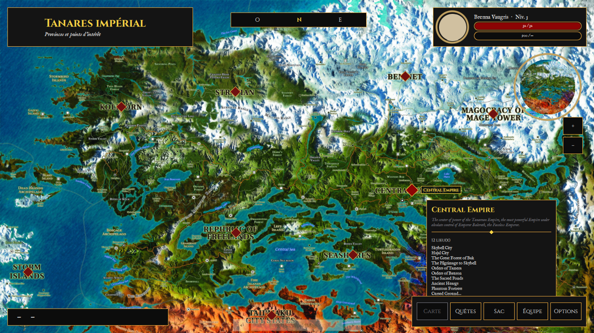 |
T3.7 — L'équipe de mercenaires (maquette 09)
Deux écrans deviennent un. La feuille d'équipe (TeamSheetForm, LOT-38) et le tableau de la Guilde (GuildBoardForm) sont remplacés par CompanyForm, à quatre onglets : Équipe, Recrutement, Contrats, Réserve.
- Le routeur suit, de la table pure au QML :
RpgScreenIdetScreenRouter::RpgScreenperdentGuildBoardetTeamSheetet gagnentCompany(huit écrans du RPG au lieu de neuf, les vérifications statiques d'alignement comprises). La tablerpgScreens()réunit les deux ossatures en une, avec la clé de titrerpg.company.title(fr/en).ScreenStacket--screen=passent de quatorze à treize écrans (--screen=Company). La doublure du routeur et la barre de navigation de la carte suivent. Les tests du cycle et de la superposition sont mis à jour (huit écrans, l'équipe suspend le jeu), et ils passent. - L'onglet Équipe est celui de la maquette : blason et devise, quatre compteurs, six places d'équipe, base principale et son état, bâtiments, personnel, hauts faits, spécialisation et style, trésors. Contrats reprend le tableau de la Guilde (liste et fiche du contrat) ; Recrutement et Réserve sont des registres.
- Les membres viennent des personnages existants : le personnage de démonstration occupe la première place (nom et niveau réels), les cinq autres sont libres. Tout le reste attend les lots de la compagnie (
LOT-45,LOT-83) : 26 cléscompany.*, relevées parlist_pending_bindings.py. - Brique
LedgerList: un registre de lignes libellé/valeur dans un sous-panneau à bandeau, que les écrans sans maquette réutiliseront (T3.9).
Écarts : les champs de la feuille d'équipe v1 que la maquette ne montre pas (bénéficiaire, relations, rêve, dessein caché, récompenses légendaires, quartier général en huit installations) ne sont plus dessinés. Ils n'avaient aucune donnée, et leurs libellés restent au catalogue. L'illustration de la base n'est pas au cahier (données de la compagnie) : son cadre est vide.
| Maquette | 1920 × 1080 | 1280 × 720 |
|---|---|---|
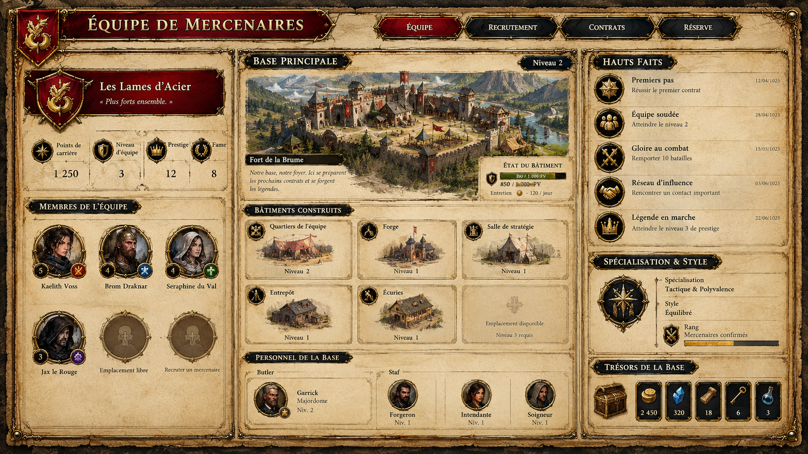 | 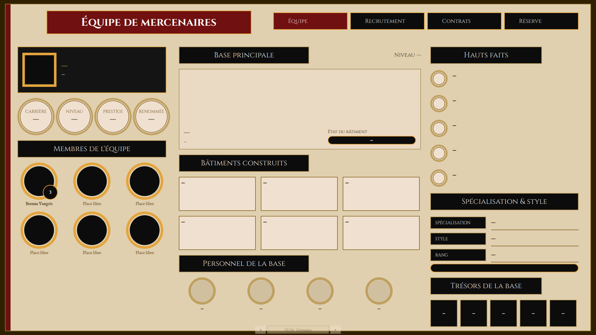 | 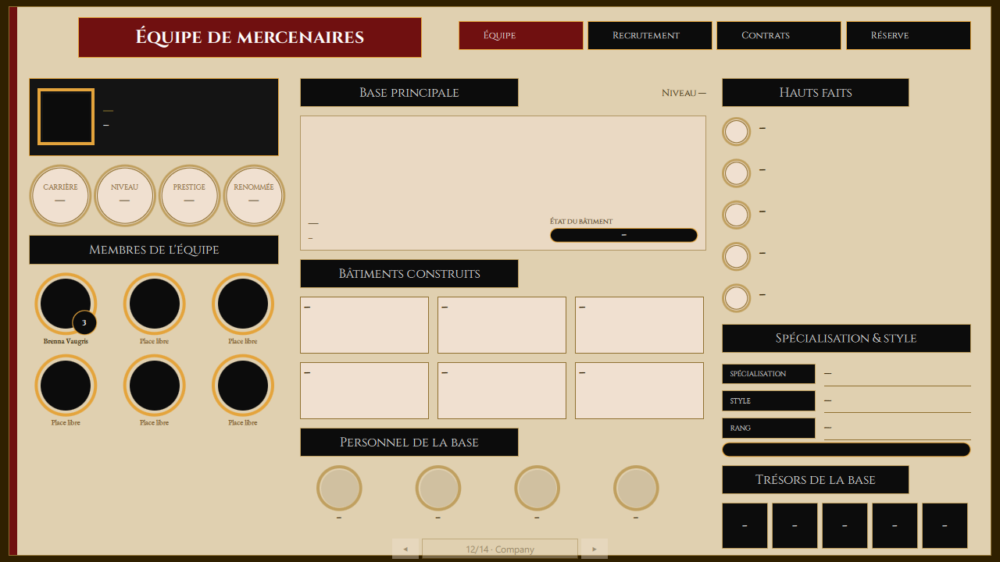 |
T3.8 — Les compétences et sorts (maquette 10)
Nouvel écran, SkillsForm. À gauche, les attaques et les sortilèges ; au centre, les écoles de magie avec leurs emplacements et leurs sorts connus ; à droite, le détail du sort choisi.
- Il entre dans le routeur :
RpgScreenId::SkillsetScreenRouter::RpgScreen::Skills, placés juste après la fiche dans les deux énumérations, qui restent alignées (static_assert). Le RPG compte à nouveau neuf écrans, et le cycle passe de la fiche aux sorts. Une ossature de table (rpg.skills.titleet quatre clés de bloc, fr/en) et--screen=Skills: quatorze écrans. Les tests du cycle et de la superposition suivent (les sorts suspendent le jeu). - On y entre depuis la fiche : un bouton « Compétences et sorts » sous la liste des compétences. Le bouton Fiche ramène à la fiche.
- Aucune donnée avant le
LOT-35: chaque valeur passe parPendingData, et les 28 clésskills.*apparaissent danslist_pending_bindings.py. - Huit écoles, et non neuf : celles du lexique des règles (
LOT-30,magicSchoolName). La maquette montre une « Thaumaturgie » que les règles ne connaissent pas ; le cahier la porte parmi les icônes (ui/icon/school/thaumaturgy), aucun écran ne la pose. - Navigation au clavier : les flèches désignent une école, que signale la marque d'or (
FocusMark,EX-IHM-071). - Brique
SpellEntry: une attaque ou un sortilège, avec son icône dans son anneau et ses caractéristiques.
Écarts : la maquette reprend en tête les onglets de la compagnie (Équipe, Recrutement…), une copie visible de la maquette 09 ; ils ne sont pas repris, et un bouton Fiche prend leur place. Pas de bouton « Gestion des sorts » : il n'aurait rien à ouvrir (EX-IHM-072).
| Maquette | 1920 × 1080 | 1280 × 720 |
|---|---|---|
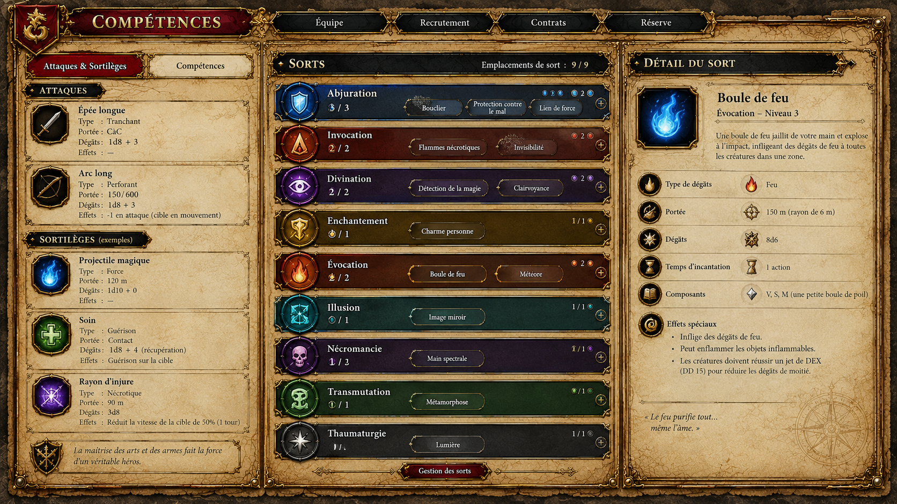 | 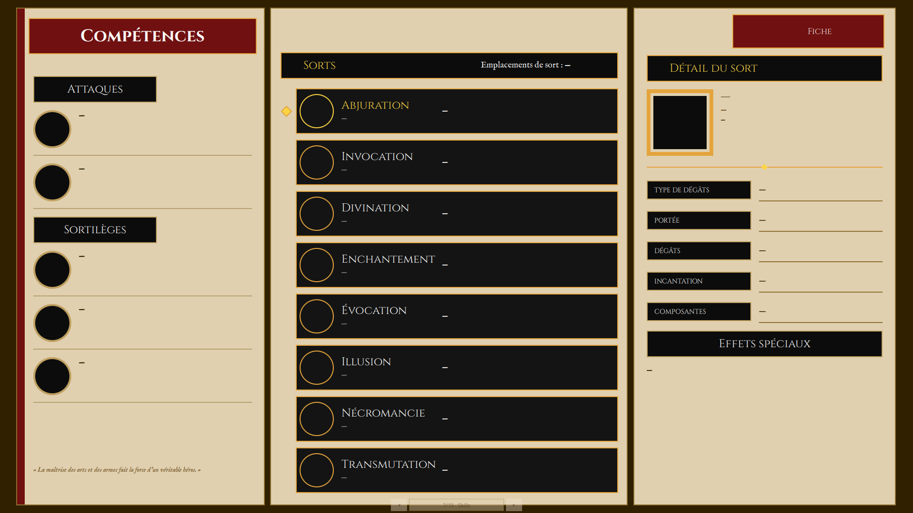 |
T3.9 — Pause, dialogue, marchand, journal : restylés
Pas de maquette : les briques et les jetons de la charte v2, sur la structure v1 de chaque écran. La matière suit la charte : panneau sombre pour la pause et le journal, parchemin pour le dialogue et le marchand.
ScreenPage, nouveau châssis v2, remplaceRpgScreenFrame: fond, grand panneau de la matière, plaque de titre (grenat ou noire), et au pied la mention « Écran dessiné, données à venir » quandpendingest vrai. Les jumeaux de ces écrans ne changent pas : ils posent les mêmes propriétés, reprises à l'identique par les nouveaux formulaires.- Les listes sont des
LedgerList(T3.7), les champs desFieldRow(T3.4), le portrait unPortraitFrame. - La pause reprend les boutons et la marque de focus du menu principal (T3.1). Son jumeau branche désormais le survol et le clic des boutons, et non plus la zone de
MenuEntry.
Critère du plan, à une exception près : plus aucun formulaire de ces quatre écrans ni de ceux de la phase 3 n'emploie ParchmentFrame, Cabochon, TitleBanner, MenuEntry ou Sheet*. Le HUD de combat (CombatHudForm) les emploie encore : sa réécriture est le T4.1, en phase 4, et les contrôles v1 partent au T5.2 une fois qu'il est fait.
| Écran | 1920 × 1080 | 1280 × 720 |
|---|---|---|
| Pause | 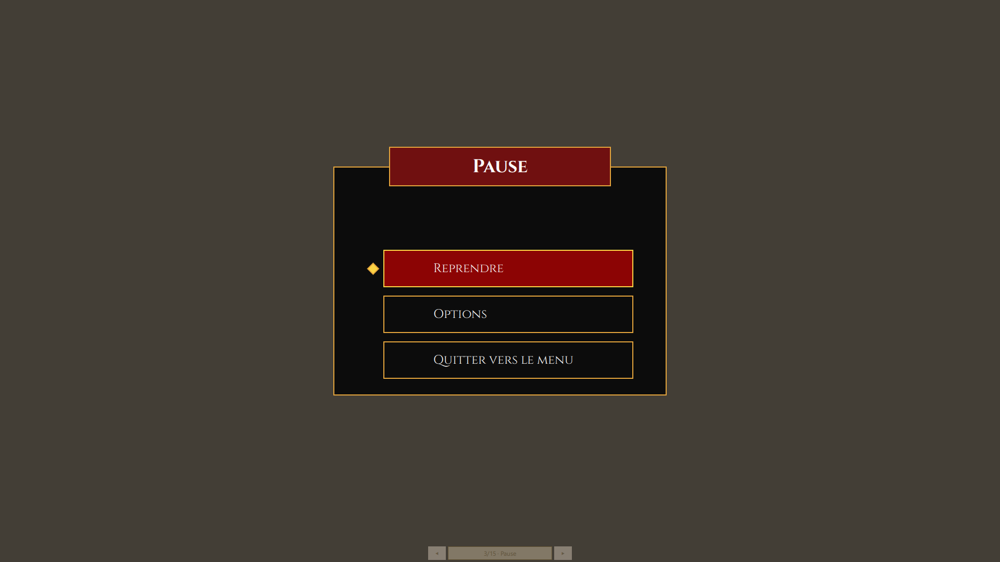 | 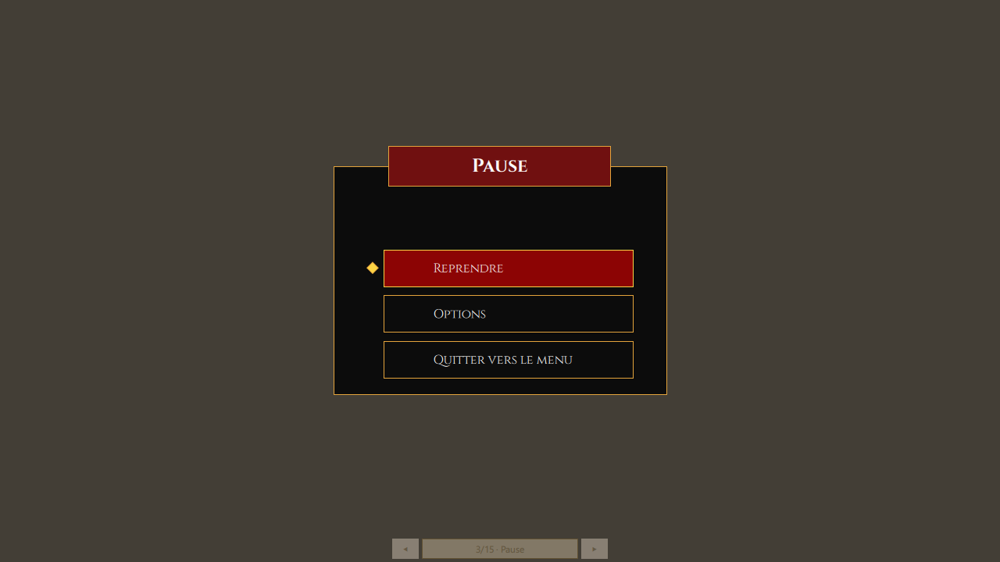 |
| Dialogue | 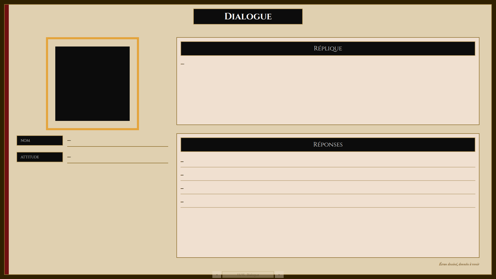 | 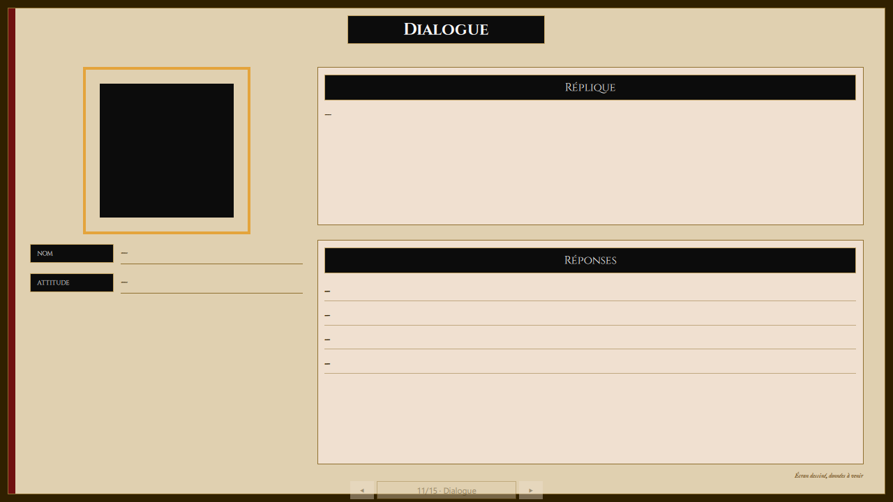 |
| Marchand | 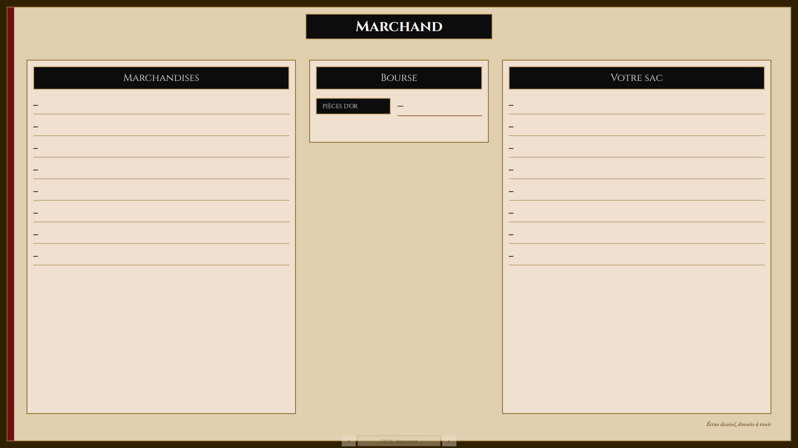 | 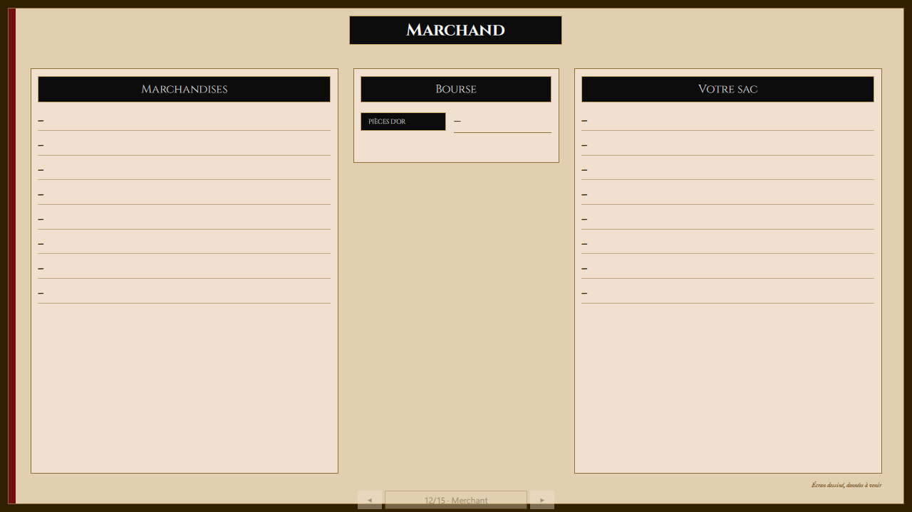 |
| Journal | 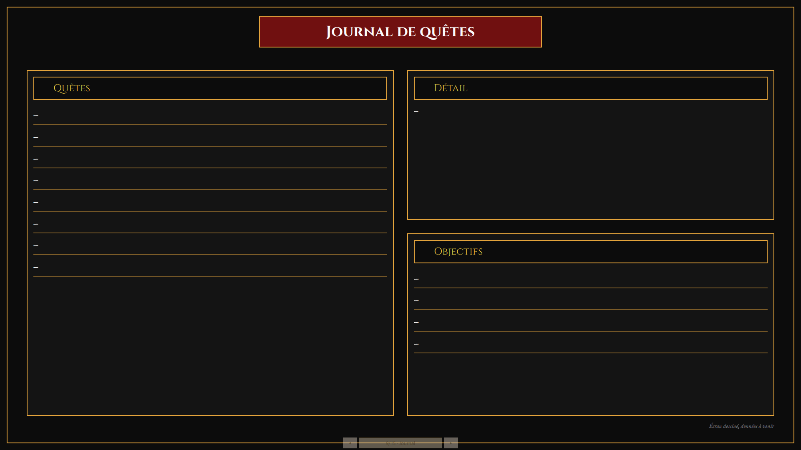 | 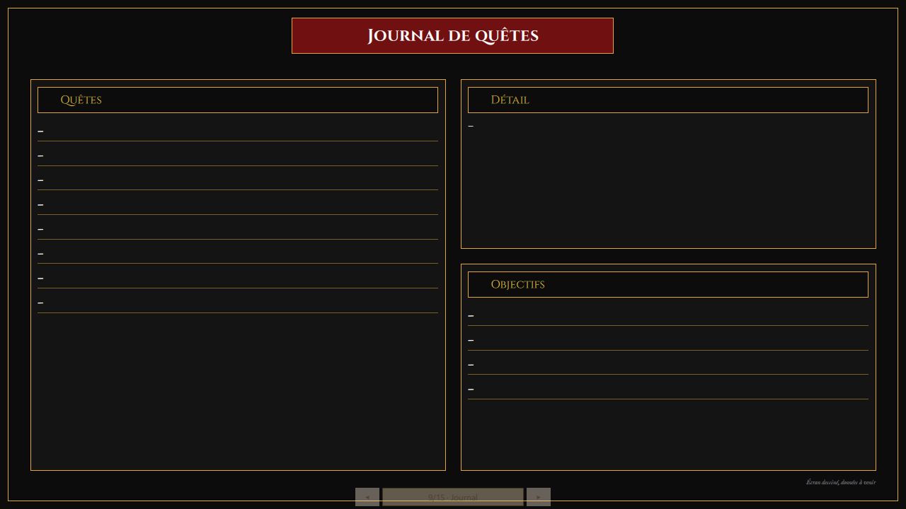 |
Où en est la phase 3
Les neuf tâches sont faites, une PR par tâche, empilées : #28 (T3.1, fusionnée), puis #29 à #36. Aucune image du cahier n'est encore produite : tous les écrans sont posés sur les aplats de repli des briques, et les captures jugent la mise en page. La porte 3 attend la revue.
Phase 4 — le cadre du HUD
T4.1 — Le HUD de jeu (maquette 01), sans la scène
Le cadre de la maquette, posé par-dessus la surface de rendu : ni fond ni panneau plein écran, tout ce qui n'est pas un bloc laisse voir la scène. La scène elle-même reste le viewport QRhi en pixel art ; la scène isométrique peinte de la maquette n'est pas un objectif du moteur (charte v2, « ce qui est écarté »).
- Un châssis, deux formulaires.
HudFrame(Controls/) porte ce que la vue de jeu et le combat partagent : l'hôte de la surface de rendu, le personnage actif (portrait HUD et pastille de niveau, plaque du nom, jauges de vie et d'expérience), la colonne des quatre membres, la barre de boussole, la mini-carte, les quêtes, le jour et le lieu, les raccourcis de navigation et l'indicateur de mode.GameViewFormle pose en modeexploration, avec le rappel « aucune carte à jouer » ;CombatHudFormen modecombat, et y ajoute ce qui n'appartient qu'au combat : journal, ordre d'initiative, roue et barre de huit actions, fiche de la cible. Même motif queScreenPageau T3.9 : le cadre dans le châssis, le propre de l'écran dans le formulaire. - Le HUD de combat se superpose au viewport, qu'il pose lui aussi dans l'hôte : c'est un écran du routeur, que la pile charge à la place de la vue de jeu, et sans surface à lui il aurait masqué la scène au lieu de l'encadrer.
- Tout est en attente (
PendingData), comme le plan le veut : 10 cléshud.*, lues à l'identique par les deux jumeaux, et 12 cléscombat_hud.*, relevées parlist_pending_bindings.py. L'exploration et le groupe (LOT-19,LOT-20) et le combat tactique (LOT-24) remplacerontPendingDatadans les jumeaux, sans toucher aux formulaires. Le cadre l'annonce sous la boussole (« HUD dessiné, données à venir »), sur un aplat : sous le cadre, c'est la scène, dont rien ne garantit le contraste. - Les listes suivent
SheetRowModel(label,value), ce quePendingData.rows()pose : un membre porte son nom, ses points de vie (42 / 52) et un rôle facultatifratioqui remplit sa jauge — le formulaire ne découpe pas la chaîne, Qt Design Studio y refusant tout appel de fonction (qmllint6.11 le signale) —, une quête son titre et son objectif (la première est la quête suivie), une ligne du journal son texte et le tour qu'elle ouvre (ally,enemy), une action son nom et ses charges. - Clavier d'abord. Chaque case d'action écrit sa touche dessous, et les touches
1à8du jumeau choisissent l'action que la roue affiche. Les raccourcis de navigation ouvrent l'inventaire, le journal, la carte et les options par le routeur, depuis la vue de jeu comme depuis le combat. - Deux jetons relevés, comme la charte le laissait au T4.1 :
textAlly(#74e4fc, « Tour de Kaelith Voss », zone (72, 692, 228, 710)) ettextEnemy(#ac443c, « Tour de l'ennemi », (72, 806, 190, 824)), mesure « trait » sur la maquette 01, ajoutés àmeasure_mockup_palette.py(--check: 12 rôles, 0 divergence). L'or de la quête suivie estgoldLight, déjà relevé. Le camp se lit aussi à sa marque — losange pour un allié, rond pour un ennemi —, jamais à sa seule teinte. - Deux briques, dans la galerie :
ActionSlot(ui/slot/action, nom écrit dans la case tant que l'icône manque, charges, raccourci) etOrnateRoundButton(ui/button/roundet son icôneui/icon/nav/*, libellé dans le rond tant que l'icône manque). PasRoundButton: le nom est pris parQtQuick.Controls. - Plus aucun formulaire n'emploie les contrôles v1 (
RpgScreenFrame,ParchmentFrame,Cabochon,TitleBanner,MenuEntry,FocusFleuron,Sheet*) : ils ne se citent plus qu'entre eux, et partent au T5.2.
Écarts :
- Deux modes, pas trois. La maquette écrit « Exploration · Tactique · Aventure » ; le moteur ne connaît que
explorationetcombat(IGameMode::name()). « Aventure » reviendra avec un mode qui la porte. - Pas de boutons de zoom sur la mini-carte : il n'y a pas encore de carte locale à agrandir (
EX-IHM-072). La mini-carte est une image en attente (hud.minimap). - Un ordre d'initiative, absent de la maquette, sous la boussole : la feuille de route du
LOT-24le demande, et la v1 l'affichait. La fiche de la cible garde de même ses états. - Pas d'icône de classe à droite des membres ni d'icône par ligne du journal : aucune pièce du cahier ne les porte. Le membre actif est marqué par
FocusMark(EX-IHM-071). - Boussole fixe (O, N, E), comme sur la carte du monde (T3.6) : la caméra ne tourne pas.
- Quatre raccourcis : Sac, Quêtes, Carte, Options — les icônes de la maquette (sac, livre, parchemin, roue dentée), prises dans
ui/icon/nav.
jadg_en.ts est régénéré (update_translations) : outre les chaînes du HUD, il rattrape celles de ScreenPage (T3.9) et du jumeau de la carte (T3.6), que le fichier n'avait pas encore.
| Maquette | Combat, 1920 × 1080 | Combat, 1280 × 720 |
|---|---|---|
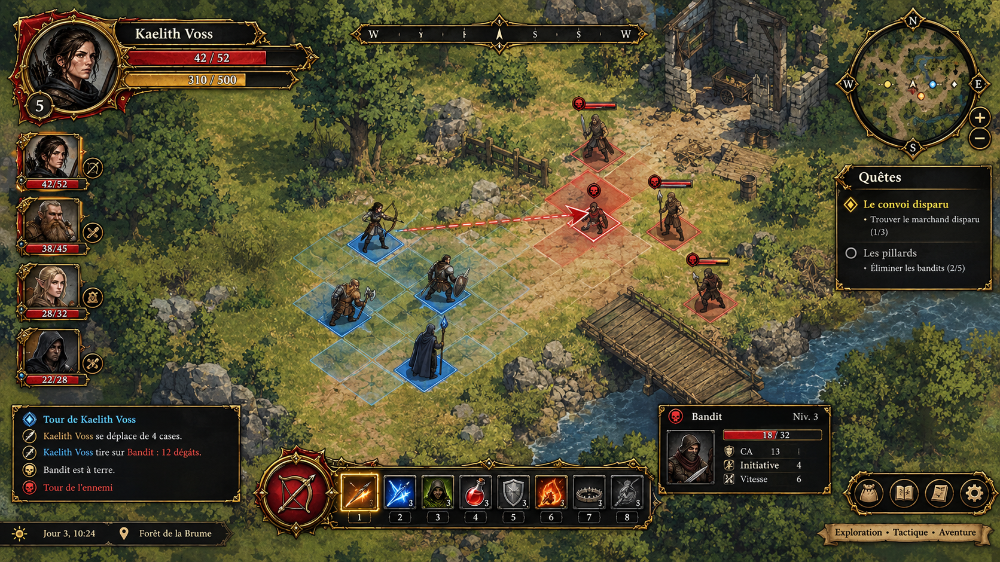 | 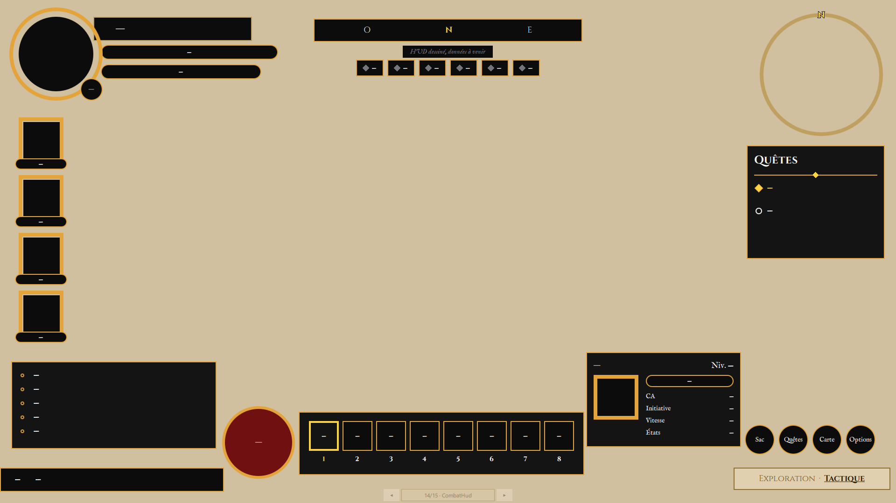 |
| Exploration, 1920 × 1080 | Exploration, 1280 × 720 |
|---|---|
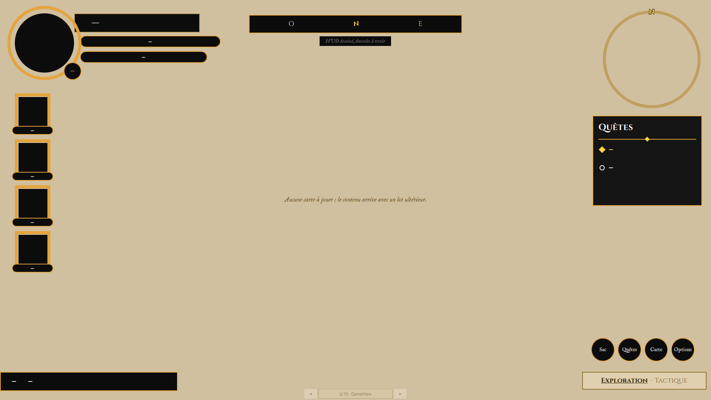 | 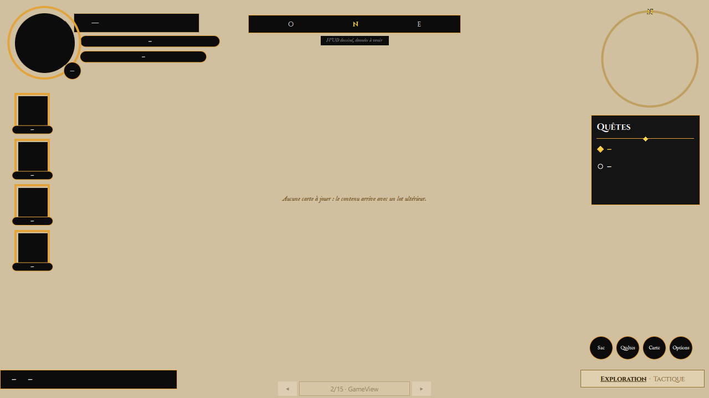 |
Phase 5 — retirer ce qui ne sert plus
T5.1 — Le pack de maquettes
Déjà fait à la phase 0 : les dix PNG avaient rejoint references/ et le reste du pack (kits QML, zip, build) avait été supprimé avant l'ouverture de la branche du lot. git grep -i "MercenaryRpgUiKit\|JADG_UI\|UI_ASSET_PACK" ne renvoie plus rien qu'un jeton CMake sans rapport (JADG_UI_QML_FILES, la liste des fichiers du module Jadg.Ui). Aucune icône schématique du pack n'a été promue en icône produite : la production des images n'a pas tourné pour ce lot (T2.6), donc rien ne restait à basculer sous Source/Elements/Assets/UI/icons/.
T5.2 — L'ancienne charte
- Treize contrôles du
LOT-86retirés deSource/Ui/Controls/et deSource/Ui/CMakeLists.txt—RpgScreenFrame,ParchmentFrame,Cabochon,TitleBanner,FocusFleuron,MenuEntry, et les sept briques de fiche (SheetActionBar,SheetBlock,SheetLine,SheetList,SheetPortrait,SheetProse,SheetTrack). Vérifié un par un avant suppression : aucune instanciation restante en dehors de la chaîne elle-même (RpgScreenFrame { … }n'apparaissait plus nulle part),MenuEntrycompris — la seule mention restante était une comparaison en commentaire dansItemSlot.ui.qml, laissée telle quelle. - Les jetons obsolètes de
Tokens.qmlretirés :screenTitle,sectionTitle,body,caption,spaceSmall,spaceMedium,spaceLarge,spaceExtraLarge,frameThickness. Un dernier écran vivant les lisait encore :DiagnosticsOverlay.ui.qml(le compteur d'images par seconde,LOT-86, superposé au jeu et non transcrit par la phase 3 puisqu'il n'a pas de maquette) — basculé surgapSmall,gapMedium,strokeWidthetfontCaption.scalereste : ce n'est pas un jeton de la charte v1, mais le facteur entier du viewport en pixel art (Main.qml,DiagnosticsOverlay.ui.qml), que la charte v2 ne remplace pas (T2.2). - Les deux polices pixel dans le jeu :
registerIdentityFonts()(Source/App/Game/Main.cpp) n'enregistre plusPixelifySans-*.ttfniPressStart2P-Regular.ttf, la phase 3 ayant transcrit les quatorze écrans. Écart assumé : les deux fichiers de police et leurs licences restent dansSource/Elements/Assets/Fonts/. Ils sont encore chargés parhmi::applyFont()(Source/HMI/Interface/ApplicationTheme.cpp), qui sert une portée entièrement distincte — la portée identité du châssis d'édition en Qt Widgets (LOT-56/LOT-68, Conception de l'IHM), avec son propre système de jetons (hmi::identityTokens(),DesignTokens.cpp) construit sur une échelle entière en pixels, sans rapport avecSource/Ui/Theme/Tokens.qml. Ce plan ne couvre que les écrans QML du jeu (Source/Ui/**) ; faire suivre cette seconde portée à la charte v2 — ou trancher qu'elle reste en pixel art — est une décision hors du périmètre duLOT-87, laissée ouverte. Les licences des deux polices restent donc légitimement dansTHIRD-PARTY-NOTICES.mdetcredits.jsontant qu'elles sont chargées. MenuBackdropGeometryetKeyHintText(Source/HMI/Presentation/) : non retirés — ils appartiennent au châssis Qt Widgets duLOT-86(menu et écran d'options de l'éditeur), une portée distincte des formulaires QML de ce lot, et rien dans les quatorze écrans transcrits ne les cite. Retirer du code de production hors du périmètre annoncé par ce plan n'a pas été fait sans décision explicite ; laissé ouvert au même titre que ci-dessus.guide-design-ihm.mdmis à jour : la note « déplacé auLOT-86» citaitParchmentFrame.ui.qml,MenuEntry.ui.qmletFocusFleuron.ui.qml, trois fichiers désormais supprimés ; la note dit maintenant que la charte v2 les a remplacés par des images 9-patch produites (PanelFrame,FocusMark), et que l'argument peint-en-C++ ne vaut plus que pour l'éditeur.guide-ecrans.mdne citait aucun jeton ni contrôle de la charte (il documente la navigationhmi::ScreenFlowdu châssis Qt Widgets, une portée distincte) : rien à y changer.
La réception des images produites (18 septembre 2026)
Ce que le T2.6 attendait est arrivé : 213 PNG, les 213 images manquantes du cahier (chaque état et chaque membre de série compte pour une image ; ui/background/menu-scene, déjà là, porte le total à 214). Produites hors du dépôt avec ImageGen, puis mises aux dimensions exactes, alpha conservé, régions étirables uniformisées et textures raccordées avec ImageMagick. Les maquettes et la fiche de Tanares ont servi de références de style ; aucun de leurs pixels n'est repris.
- Installation par
receive_ui_assets.py, sans exception : chaque fichier renommé par sa clé (ui__button__apply__hover.png), 213 acceptés, 0 refusé (dimensions et canal alpha conformes au cahier).Artwork.qmlréécrit : les treize briques posent désormais l'image livrée à la place de leur aplat de repli, sans qu'un formulaire change. - Le prompt enregistré est celui réellement envoyé, pas celui que
assembler()recompose : la livraison fournit une fiche de provenance par PNG, dont l'empreinte SHA-256 a été recoupée avec le fichier reçu avant d'en reprendre le prompt, la date et le générateur (generator) dansillustrations.json. - La section
pendingdu manifeste est vidée : plus aucune clé du cahier n'est en attente, etcheck_ui_assets.pyvérifie désormais que chacune a son fichier. - Documentation de la livraison sous
Planning/versions/v0.0.0/v0.0.0-fondation/annexes/LOT-87-charte-v2/images-produites/: les planches par famille et par groupe d'icônes (planches/, étiquetées, ce ne sont pas des captures du jeu) et l'inventaire (inventory.json,inventory.csv: chemins, dimensions, modes d'affichage, marges, empreintes).
Deux écarts vus à l'intégration, corrigés dans le même changement :
- La mini-carte du HUD passait par
PortraitFrame, dont l'état vide est maintenant une silhouette de personnage peinte :HudFramedécoupe la carte au rond sur un disque sombre, sous l'anneauui/medallion/minimap-ring, sans cadre de portrait. - Le titre d'une
TitlePlateà largeur imposée débordait : les extrémités peintes detitle-blacksont plus larges que l'aplat de repli, et « Inventaire & équipement » ne tenait plus dans ses 510 px. Le texte tient désormais entre les ornements (70 % des marges du cahier) et sa police se réduit plutôt que de déborder.
Vérifié : les dix-neuf références d'écran de QmlTests régénérées et relues une à une (menu, options, crédits, fiche, inventaire, compagnie, sorts, pause, dialogue, marchand, journal, HUD d'exploration et de combat, cinq niveaux de carte) ; scripts/build.ps1 -Preset ninja -Test : 767/767 ; check_ui_assets.py, check_ui_layers.py, check_qml_designer_compat.py, lint_exigences.py, lint_lots.py, check_translations.py verts.
Reste à faire, hors de cette réception : les essais d'interaction dans le jeu (survol, appui, manette) sur les états livrés, que les captures statiques ne montrent pas.
Exigences couvertes
EX-IHM-070,EX-IHM-075,EX-IHM-076,EX-IHM-081: refondues ou précisées par la phase 2 (T2.1), pour décrire la charte v2.EX-IHM-053: refondue par le T2.4 — les icônes des écrans du jeu sont produites, au double de leur taille d'affichage.
Bilan
Statut : livré. Exigences refondues : EX-IHM-070 (charte v2, facteur réel), EX-IHM-075 (ornements produits en images, sous trois conditions), EX-IHM-076 (illustrations extraites ou produites, jamais sans provenance). Exigence précisée : EX-IHM-081 (les deux facteurs). Phase 3 : une PR par tâche, empilées — #28 (T3.1), puis #29 à #36. Les critères d'acceptation de la phase 0 sont dans l'en-tête de la fiche.
Livré. Phases 0 à 5 faites. Les huit écrans transcrits (menu, options, crédits, fiche, inventaire, carte, compagnie, sorts), les quatre restylés sans redessin (pause, dialogue, marchand, journal) et le cadre du HUD tiennent tous sur la charte v2 ; plus aucun écran n'importe un contrôle ou un jeton de la charte v1. Les 214 images du cahier sont livrées depuis le 18 septembre 2026 (la réception) : les briques posent les images produites, plus aucun aplat de repli ne s'affiche. Restent aussi ouverts, notés au T5.2 : la portée identité du châssis d'édition (police pixel, jetons entiers) n'a pas suivi la charte v2, et les branches distantes mortes de la phase 0 attendent une suppression manuelle.
Rappel de la phase 0 :
- Branches mortes (dix-neuf) archivées sous des tags
archive/<nom>et retirées localement ; les branches distantes correspondantes restent à retirer (nécessite une confirmation explicite, hors de portée de l'automatisation). mainavancé surorigin/main, les trois worktrees obsolètes purgés.lot/LOT-87-charte-v2ouverte depuismain;scripts/checks/check_qml_designer_compat.pyetSource/Ui/DesignStudio/Main.ui.qmlrécupérés depuisarchive/fix/qt-designer-6.8.7-compatibilitypour la phase 1.- Les dix maquettes déplacées dans
references/. - Ce dossier créé : comme tout lot démarré, le
LOT-87quitteroadmap-0.1.0.mdpour cet epic, etlots.mdporte désormais son@subpage lot-87.
Source : Planning/versions/v0.0.0/v0.0.0-fondation/lots/LOT-87-charte-v2.md